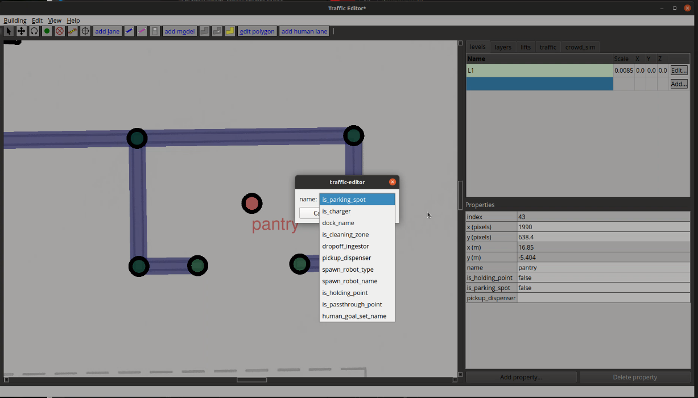

Introduction
In this section, we shall describe the motivation for ROS 2 and the RMF system for integrating multiple robots.
ROS 2
The Robot Operating System (ROS) is a set of software libraries and tools for building robot applications. From drivers to state-of-the-art algorithms, and with powerful developer tools, ROS has what you need for your next robotics project. And it’s all open source.
Before we talk specifically about ROS 2, let's review some history. Since ROS was started in 2007, a lot has changed in the robotics and ROS community. ROS 1, which at that time was just "ROS", began life as the development environment for the Willow Garage PR2 robot. The primary goal was to provide the software tools that users would need to undertake novel research and development projects with the PR2. At the same time, the ROS 1 development team knew that the PR2 would not be the only, or even the most important, robot in the world, and they wanted ROS 1 to be useful on other robots. The original focus was on defining levels of abstraction (usually through message interfaces) that would allow much of the software to be reused elsewhere.
It is fair to say that ROS 1 satisfied the PR2 use case, but also overshot by becoming useful on a surprisingly wide variety of robots. ROS 1 was used on robots that are similar to the PR2, but also on wheeled robots of all sizes, legged humanoids, industrial arms, outdoor ground vehicles (including self-driving cars), aerial vehicles, surface vehicles, and more. In addition, ROS 1 adoption was happening in domains beyond the mostly academic research community that was the initial focus. ROS 1-based products were coming to market, including manufacturing robots, agricultural robots, commercial cleaning robots, and others. Government agencies were also looking more closely at ROS for use in their fielded systems; e.g., NASA expected to be running ROS on the Robonaut 2 that was deployed to the International Space Station.
With all these new uses of ROS, the platform became stretched in unexpected ways. While it was holding up well, the ROS 1 team believed that they could better meet the needs of the broader ROS community by tackling their new use cases head-on. And so ROS 2 was born.
The initial goal of the ROS 2 project was to adapt to the changing landscape, leveraging what is great about ROS 1 and improving what isn’t. But there was also a desire to keep ROS 1 as it existed to keep working and be unaffected by the development of ROS 2. So ROS 2 has been built as a parallel set of packages that can be installed alongside and interoperate with ROS 1 (e.g., through message bridges).
As of this writing, we have reacehd the 13th and last official ROS 1 release, Noetic Ninjemys, and the first LTS release of ROS 2, Foxy Fitzroy. :tada:
There is a large and growing amount of ROS 2 resources which can be found on the web. A great place to start for ROS 2 is on the ROS Index page for ROS 2 and farther along in this book in the ROS 2 chapter. Enjoy your journey!
Robotics Middleware Framework (RMF)
Motivation for RMF
Imagine with us a world where the incredible robots that are available on the market are now able to co-exist in the same facility; gracefully sharing critical resources such as corridors, elevators/lifts, doors and other infrastructure to enable a more efficient overall system. Imagine integrating an elevator/lift for robots only once and this elevator/lift is now enabled to be used for any robot that needs to use the shared resource in a controlled and safe manner. Imagine a world free of robot deadlocks in a shared corridor. These ideas are achievable today using an amazing system called RMF.
Many companies adopt a strategy of operational efficiency and use the lever of technology, thru the deployment of robots and other smart devices, to help realize their goals. The current generation of robots in production environments today are able to provide services including both bulk and single piece flow delivery, cleaning, disinfecting, security, monitoring, and much more. The diversity in robotic use cases most likely means the best in class robots for each task will come from different robot providers or system integrators. This modern reality makes it critical for a common software framework to be in place in order to manage these heterogeneous resources and to ensure that information is being used effectively from different platforms to promote overall system efficiency.
Without an initial goal and plan for a holistically efficient robotics system, there can be a significant but hidden risk for end users when committing to a single system or platform provider. The hidden "walled gardens" are likely to force an end user to limit their selection of future solutions from that particular provider to minimize opearational risk and avoid redundant integration costs. As the scope and scale of robotic deployments increase this problem is exacerbated, leaving the customer with a perception of no good option except to stay with their current provider.
Beyond the increase cost risk of scaling deployment with different providers, there is also the inherent conflict over shared resources such as elevators, doorways, corridors, network bandwidth, chargers, operations-center screen “real estate,” and human resources such as IT personnel and maintenance technicians. As robotic scale increases, it would become more cumbersome for an operations team to consider managing a large, heterogeneous, multi-vendor robot environment.
These problem statements were the foundational motivations for the development of RMF. To unlock the end user's options and increase robotic system selection ultimately means the entire robotic ecosystem can grow. We can collectively grow the pie.
(insert re: funders and collaborators)
Historically ROS development has focused heavily on the software running on or near individual robots. RMF is designed to operate at a higher abstraction layer to create networked fleets of robots that interoperate with building infrastructure systems, enterprise services, IOT devices, and human interfaces. Unlock your facility and your future with RMF.
So what is RMF?
First and foremost, RMF is a collection of reusable, sclable libraries and tools building on top of ROS 2 which enable the interoperability of heterogeneous fleets of any type of robotic systems. RMF utilizes standardized communication protocals to infrastructure, environments and automation where robots are deployed to optimize the use of critical resources (i.e. robots, elevators/lifts, doors, passageways, etc). It adds intelligence to the system through resource allocation and by preventing conflicts over shared resources through the RMF Core which will be described in detail later in this book. RMF is flexible and robust enough to operate over virtually any communications layer and integrate with any number of IOT devices. The architecture of RMF is designed in such a way to allow scalability as the level of automation in an environment increases. There are various ways for systems and users to interact with RMF via APIs and customizable user interfaces. Once deployed in an environment, RMF will save cost by allowing resources to be shared and integrations to be minimized. In a nutshell, it is what robotic developers and robot customers have been looking for and here it is:

How does RMF make the magic happen?
One of the principles of RMF's design is to simplify and standardaize messaging as much as possible. You can see in the below diagram of the RMF Core that all of the complex interactions and coordination is currently boiled down to only fourteen standard messages.

We will explore each of these functional areas in more detail in later chapters of this book but for now we'd like to also introduce some of the other utilities that you will find helpful when developing and integrating with RMF.
RMF Demos
Demonstrations of the capabilities of RMF in various environments. This repository serves as a starting point for working and integrating with RMF.
Traffic Editor
Traffic Editor is a GUI for creating and annotating floorplans to be used in RMF. Thru Traffic Editor you are able create traffic patterns to be used in RMF and introduce simulation models to enhance your virtual simulation environments. The .yaml files can be easily exported for use in Gazebo.
Free Fleet
Free Fleet is an open-source robot fleet management system. For those robot developers who do not have their own fleet manager or who would prefer to use and contribute to an open-source fleet management utility.
Systems of Systems Synthesizer (SOSS)
The SOSS you've been missing! SOSS can be used to easily pass messages between various message formats/types including ROS 1, ROS 2, WebSocket, REST, FiWare, DDS, OPC-UA, and more.
RMF Schedule Visualizer
This visualizer is an rviz-based rmf_core visualizer and control panels ("what is it thinking") aimed towards developers
RoMi Dashboard
The Robotics Middleware for Healthcare (RoMi-H) is a healthcare specific implementation of RMF. This dashboard is a web application that provides overall visualization and control over the RoMi-H system. The dashboard is by design more "operator-friendly" compared to the previously mentioned schedule visualizer which is intended to be more functional for RMF or RoMi-H developers.
Simulation Assets
Open-source and freely distributable assets being created and shared to accelerate simulation efforts.
Jump in, the water is fine!
So now you have an idea of what RMF is all about, it's time to jump in. We would suggest if you have not already that you take the time to review the RMF Demos repository and if you want a really quick overview of RMF then take a look at this Mock Airport Terminal video demo (Short film Oscar nominations most welcome). We hope you find RMF to be a useful tool to help you scale your robot deployments and operations and we look forward to the many improvements and contributions to come!
An Introduction to ROS 2
In this chapter we will cover the basics of Robot Operating System (ROS) and give you all the tools you need to build, debug, and understand robotic applications. This chapter is laid out from the most general concepts, necessary for decision makers to make sound decisions, to specific API references needed by engineers to develop new robotic applications. Somewhere in between high level concepts, and low level API commands lives the knowledge necessary for those maintaining and supporting multi-robot deployments in the field.
A good analogy to learning about ROS is the process of learning about motor vehicles. At the practical, day-to-day level, most people will learn how to start a vehicle and safely use it on a motorway. For these individuals, learning about the high level concepts behind ROS, along with application-specific commands is probably sufficient. Those who enjoy driving often choose to learn how to repair and maintain their vehicle. If this is your interest level we recommend learning the basics of the ROS command line interface. This will allow you to "check the oil" of your robotic systems and make sure everything is functioning correctly. Finally, if you are the type that would like to swap out the engine of your vehicle with something more powerful, or potentially build a wholly new vehicle from scratch, then the ROS API is the set of tools that will make this possible. Generally speaking, automotive engineers don't appear into the world fully formed, and the same is true for roboticists. It is advisable to work through each phase of understanding as you develop your skills with ROS.
Following from our analogy above the process of learning how to use robotic systems built on ROS can be divided roughly into four parts. This chapter works through these four parts of the process, using ROS 2. Subsequent chapters then build upon this knowledge and discuss the subtleties of specific applications. The four parts of this chapter are as follows.
-
Meta-discussion of the tools and resources available to help you in the learning process.
-
A high level discussion to the design patterns use in ROS. These patterns are roughly analogous to the subsystems you would find in a vehicle (engine, brakes, safety, climate control, etc).
-
A treatment of the command line interface (CLI) for ROS. The CLI is a set of programs for starting, inspecting, controlling, and monitoring a ROS robot. You can think of this topic as teaching you how check a robot's oil, and read the instrument panel.
-
An introduction to the ROS application programming interface. This section will show you how to create your own applications and modify existing software for your specific application.
While this books aims to cover the basics it should be made clear that ROS, like almost all software is a moving target. Technology moves quickly, and while print media is helpful and delivering high fidelity instruction, that instruction can become rapidly outdated. For this reason we start this chapter with a meta-discussion of ROS resources that can be used to help you in your learning process.
ROS Resources
The most up to date to date information about ROS can be found on the web and there are a myriad of resources on-line to help you out in your educational or practical journey. One thing to keep in mind is that ROS, like most software, has different versions, and the format and structure of commands and API calls may differ slightly between versions (although the developers try to keep things as stable as possible). This book is specifically written for ROS 2, Eloquent Elusor, or ROS Eloquent to be terse. While newer or older versions of ROS will be generally helpful it is worth paying attention to the version number as there can be minor changes between versions. ROS has both major versions (i.e. ROS 1, and ROS 2) and minor versions denoted by a pair of matching letter adjectives and specific nouns related to specific genus and species of turtles (e.g. Eloquent Elusor, or Foxy Fitzroy). The biggest difference in the CLI and API come between the major versions, i.e. ROS 1 and ROS 2. There may be minor changes between minor versions, and usually it is the addition of features, not their modification or removal. It is worth noting that ROS versions are usually pegged to specific version of Ubuntu Linux. If your search engine results are specific enough for your particular problem it is a good practice to append your ROS version to your search. Moreover, when seeking help or posting questions online you should always specify the version of ROS version you are using.
ROS grew up with the modern web, and as such it has a variety of tools and forums to help you solve problems and learn about the API and tools. Some of our web resources actually pre-date more widely used systems, so it helps to know where they are and how to use them. Probably the most important resource on the web for ROS users is answers.ros.org. Answers is a Q&A website similar to StackOverflow. Once you register for Answers you can ask or answer any question ROS related. Be aware that asking a question well can be difficult. You should include as much information as possible to help others answer your question. This means you should include the ROS version, any debugging or stack trace information you have, and the offending source code.
Aside from ROS Answers you should check out both the ROS 2 tutorials and API documentation and the ROS 1 wiki. The ROS 1 wiki can be found at http://wiki.ros.org/ and while it is specifically dedicated to ROS 1, much of the information is still relevant to ROS 2. If you are searching for up to date ROS 2 information your go to source for this information is the ROS 2 tutorials and API documents located at https://index.ros.org/doc/ros2/. Many of the tutorials you will find in this book pull directly from this body of work. If you would like to find the latest ROS news and discuss various ROS features the ROS Discourse forum at https://discourse.ros.org/ is your best bet. ROS discourse is the community hub where developers discuss their latest projects and debate the finer points of ROS development.
For ROS application developers there are number of tools to help you connect with the broader ROS developer community. Open Robotics supports index.ros.org which is an extended list of ROS packages sorted by version. If you are searching for a ROS driver for a particular piece of hardware then the index is a great place to start. If you find a package with failing tests, or would like to know the build status of any ROS package at build.ros.org. Similarly, for un-indexed packages GitHub maintains a ROS code tag. This tag will allow you to search all of the tagged repositories that are publicly listed. At the time of writing there were close to 4000 repositories listed on github, so there is a pretty good chance you'll find what you need.
Finally, there are a variety of unofficial resources that you should be aware of that can be useful, particularly if you want to keep yourself up to date with the latest ROS projects and features. Both Open Robotics and ROS maintain twitter feeds to share the latest news. We also have a yearly ROS developers conference called ROSCon; most talks are freely available on the web. There are a few other resources that can also be useful including the ROS subreddit an "unofficial" ROS Discord.
Setting Up Your Computer
For this chapter we assume that you are working on a modern desktop with a discrete graphics card. While a graphics card isn't necessary for this chapter later chapters will be graphics intensive and having one will greatly improve the end user experience. Moreover, this book assumes you are working with the Ubuntu Linux 20.04 operating system. While other operating systems are supported by ROS 2, all of the tutorials and instructions on this book assume you are running Linux. If instead use a Mac or Windows PC you can either install ROS 2 Eloquent Elusor using the instructions found in the ROS 2 installation instructions. An alternative path for installation on Mac and PC is to using a virtual machine. Roughly the process for doing so is as follows:
- Install virtual machine software like Virtual Box or VMWare. On your host machine.
- Create a virtual machine using the software, and install Desktop Ubuntu 18.04 Bionic Beaver from the Canonical website. Configure the installation as you wish.
- Now start your virtual machine and log in as a user. The directions below should be applicable.
For these initial tutorials we will be working with the pre-compiled ROS 2:
Eloquent Elusor desktop version. These directions follow directly from the
installation instructions found on the [Eloquent release
page]https://index.ros.org/doc/ros2/Installation/Eloquent/Linux-Install-Debians/). To
run these commands you'll need a terminal window. To open a terminal in Ubuntu
18.04 click on the nine dots in the bottom left hand of the screen. A dialog
should appear. Enter the word terminal and click on the terminal icon to open
a terminal. Alternatively, you can press the control, alt, and 't' keys
simultaneously to open a terminal (we abbreviate this CTRL-ALT-T).
Setup Locale
The first step is to make sure you have a locale which supports UTF-8. What this means is that we
will check that the language used by your computer uses a particular format of
text. If you are in a minimal environment, such as a docker container, the locale may be
something minimal like POSIX. We test with the following settings. It
should be fine if you're using a different UTF-8 supported locale.
sudo locale-gen en_US en_US.UTF-8
sudo update-locale LC_ALL=en_US.UTF-8 LANG=en_US.UTF-8
export LANG=en_US.UTF-8
Setup Sources
You will need to add the ROS 2 apt repositories to your system. Out of the box Ubuntu doesn't know where the ROS 2 binary programs live so we have to give it a secure location. To do this the computer will prompt you for your root password. For more technical readers we need to authorize the ROS GPG key with apt by typing the following command in the terminal:
sudo apt update && sudo apt install curl gnupg2 lsb-release
curl -s https://raw.githubusercontent.com/ros/rosdistro/master/ros.asc | sudo apt-key add -
Install ROS 2 packages
The next steps for installing ROS is to do a system update (i.e. check for newer programs) and then install ROS Eloquent. To do this we run the following commands. Be aware that these commands will download a lot of data and may take awhile. It is best to run these commands on your home network.
sudo apt update
Desktop Install (Recommended): ROS, RViz, demos, tutorials.
sudo apt install ros-eloquent-desktop
Next we'll install a set of tutorials called TurtleSim. To do this we run
another apt command.
sudo apt install ros-eloquent-turtlesim
ROS 2 command line tools use argcomplete for autocompletion. If you want autocompletion, installing argcomplete is necessary. We're also going to install a few other tools to make our lives easier.
sudo apt install python3-argcomplete htop byobu
Check Your Installation
ROS uses environment variables to help keep track of what version of ROS is
running and where all the programs using ROS are used on the computer. To set
these environment variable we source, or load, a bash script file. A bash
script file isn't magic; it is just a series of commands to enter into the
terminal, just like the series of commands we just entered to setup ROS. It is
possible to have different version of ROS running on a single computer. Using
the wrong version of ROS can lead to all sorts of problems and is a common
mistake for new users! If you are having problems try sourcing the correct ROS
bash file. From now on, whenever you open a new terminal, you will
need to tell the computer which version of ROS to use. To set the necessary
environment variables for ROS you need to source a bash file every time you
open a new terminal. Yes, this is annoying, but it is a sound approach as it
makes the version of ROS you are using explicit. On Ubuntu 18.04 all versions of
ROS live in /opt/ros/. Inside this directory will be a programs and script
files to run ROS. To tell the operating system that we want to use ROS Eloquent
we simply source the ROS Eloquent setup.bash file using the command below.
source /opt/ros/eloquent/setup.bash
Once that command runs your terminal should be ready to run a ROS program. Let's
test our installation by running two small ROS programs called talker and
listener. These two programs will send data back and forth using ROS to
perform the communication. One program was written in C++ and the other in
Python. Running these two different programs is a quick and easy way to check
that your ROS system is configured correctly. To start the talker run the following command.
source /opt/ros/eloquent/setup.bash
ros2 run demo_nodes_cpp talker
If everything is working correctly you should see something like the following:
kscottz@kscottz-ratnest:~$ ros2 run demo_nodes_cpp talker
[INFO] [talker]: Publishing: 'Hello World: 1'
[INFO] [talker]: Publishing: 'Hello World: 2'
[INFO] [talker]: Publishing: 'Hello World: 3'
....
Now, let's fire up the listener. We're going to use a Python listener in this
example to make sure we installed Python correctly. First we will need a second terminal. We can
open a new terminal tab by entering CTRL-SHIFT-T in our terminal. We can also
create a wholly new terminal by pressing CTRL-ALT-T. Pick whatever works best
for you. Now in your new terminal source your bash file and run the following
command.
source /opt/ros/eloquent/setup.bash
ros2 run demo_nodes_py listener
If everything is working correctly you should see something like the following:
kscottz@kscottz-ratnest:~$ ros2 run demo_nodes_py listener
[INFO] [listener]: I heard: [Hello World: 264]
[INFO] [listener]: I heard: [Hello World: 265]
[INFO] [listener]: I heard: [Hello World: 266]
Now that we have tested our ROS installation we can stop these two programs. In
ROS most programs run in infinite loops until the robot is shut down. To stop
these programs we navigate to the terminal running the program and press the
Ctrl and C keys simultaneously. We call this combo CTRL-C and you can use
it to stop just about any program in a terminal. Use it to stop the talk and
listener programs.
ROS Concepts and Design Patterns
As we said, learning about ROS is similar to learning about an automobile. In fact, a car is a lot like a robot (and sometimes it really is a robot; cf. the large and active self-driving vehicle industry). A modern automobile comprises many parts that are connected to each other. The steering wheel is connected to the front axle, the brake pedal is connected to the brake calipers, the oxygen sensor is connected to the fuel injectors, and so on. From this perspective, a car is a distributed system: each part plays a well-defined role, communicating (whether electrically or mechanically) as needed with other parts, and the result of that symphony-like coordination is a working vehicle.
A key philosophical tenet of ROS is that robotics software should also be designed and developed as a distributed system. We aim to separate the functions of a complex system into individual parts that interact with each other to produce the desired behavior of that system. In ROS we call those parts nodes and we call the interactions between them topics (and sometimes services, but we will get to that).
The ROS Communication Graph
Imagine we are building a wheeled robot that chases a red ball. This robot needs a camera with which to see the ball, a vision system to process the camera images to figure out where the ball is, a control system to decide what direction to move, and some motors to move motors to move the wheels to allow it to move toward the ball. Using ROS we might construct the system like so:

This design separates the software into four ROS nodes: two device drivers and two algorithms. Those nodes communicate with each other as shown, via three ROS topics. We call this structure a ROS communication graph: the nodes are the graph vertices and the topics are the graph edges. You can tell a lot about a ROS system by examining its communication graph.
The camera driver node is responsible for handling the details of interacting with the physical camera, which might happen through a custom USB protocol, through a vendor-provided library, or in some other way. Whatever those details, they are encapsulated inside the camera driver node, which presents a standard topic interface to the rest of the system. As a result, the blob finder node does not need to know anything about the camera; it simply receives image data in a standard format that is used for all cameras in ROS. The output of the blob finder is the detected location of the red ball, also in a standard format. Then the target follower node can read in the ball location and produce the steering direction needed to move toward the ball, again in a standard format. Finally, the motor driver node's responsibility is to convert the desired steering direction into the specific instructions necessary to command the robot's wheel motors accordingly.
Publish-subscribe messaging: topics and types
With the example of the ball-chasing robot in mind, we can add some terminology to describe what is happening as the system operates. First, the ROS communication graph is based on a well-known pattern called publish-subscribe messaging, or simply pub-sub. In a pub-sub system, as the name implies, data are sent as messages from publishers to subscribers. A publisher may have zero, one, or multiple subscribers listening to its published messages. Messages may be published at any time, making the system asynchronous.
In ROS, nodes publish and subscribe via topics, each of which has a name and a
type. A publisher announces that it will be publishing data by advertising a
topic. For example, the camera driver node may advertise a topic named /image
with type sensor_msgs/Image. If the blob finder node subscribes to a topic
with the same name and type, then the two nodes find each other and establish a
connection over which image messages can get from the camera driver to the blob
finder (the nodes find each other and establish those connection in a process
called discovery, which will be treated in detail later in this book). Each
message that flows across the /image topic will be of type
sensor_msgs/Image.
A single node can be (and often is) both a publisher and a subscriber. In our example, the blob finder subscribes to image messages and publishes ball location messages. Similarly the target follower subscribes to ball location messages and publishes steering direction messages.
A topic's type is very important. In fact, taken together, the ROS types are
among the most valuable aspects of the entire platform. First, a type tells you
the syntax: which fields, of which types, does the message contain? Second, it
tells you the semantics: what do those fields mean and how they should be
interpreted? For example, a thermometer and a pressure sensor might produce what
appear to be the same data: a floating-point value. But in ROS a well-designed
thermometer driver node would publish one clearly defined type (say,
sensor_msgs/Temperature), while a pressure sensor driver node would publish
another (say, sensor_msgs/FluidPressure).
We always advise the use of semantically meaningful message types.
For example, ROS provides simple message types like std_msgs/Float64, which
contains a single 64-bit floating-point field called data. But you should only
use that sort of generic type for rapid prototyping and experimenting. When you
build a real system, even if something like std_msgs/Float64 could get the job
done on syntax, you should instead find or define a message that also matches
the semantics of your application.
Why publish-subscribe?
Given that it comes with additional complexity (nodes, topics, types, etc.), it is reasonable to ask why ROS follows the pub-sub pattern. After more than a decade of building and deploying ROS-based robot systems, we can identify several key benefits:
- Substitution: If we decide to upgrade the robot's camera, we need only modify or replace the camera driver node. The rest of the system never knew the details of the camera anyway. Similarly, if we find a better blob finder node, then we can just swap it in for the old one and nothing else changes.
- Reuse: A well-designed blob finder node can be used today on this robot to chase the red ball, then reused tomorrow on a different robot to orange cat, and so on. Each new use of a node should require only configuration (no code) changes.
- Collaboration: By cleanly separating concerns between nodes, we let our blob finder expert do her work independently of the target follower expert, with neither of them bothering the device driver expert. It is often the case that a robot application requires the combined expertise of many people, and it would be difficult to overstate the importance of ensuring that they can each contribute confidently and efficiently.
- Introspection: Because the nodes are explicitly communicating with each other via topics, we can listen in. So when the robot fails to chase the red ball, and we think that the problem is in the blob finder, we can use developer tools to visualize, log, and play back that nodes inputs and outputs. The ability to introspect a running system in this way is instrumental to being able to debug it.
- Fault tolerance: Say that the target follower node crashes because of a bug. If it is running in its own process, then that crash will not bring down the rest of the system, and we can get things working again by just restarting the target follower. In general with ROS we have the choice to run nodes in separate processes, which allows for such fault tolerance, or run them together in a single process, which can provide higher performance (and of course we can mix and match the two approaches).
- Language independence: It can happen that our blob finder expert writes her computer vision code in C++, while our target follower expert is dedicated to Python. We can accommodate those preferences easily by just running those nodes in separate processes. In ROS, it is perfectly reasonable, and in fact quite common, to mix and match the use of languages in this way.
Beyond topics: services, actions, and parameters
Most ROS data flow over topics, which we introduced in the previous sections. Topics are best for streaming data, which includes a lot of the common use cases in robotics. For example, going back to our ball-chasing robot, most cameras will naturally produces a stream of images at some rate, say, 30Hz. So it makes sense for the camera driver to publish the ROS messages containing those images just as soon as they're received. Then the blob finder will be receiving image messages at 30Hz, so it might as well publish its ball location messages at the same rate, and so on, through the target follower to the motor driver. We might say that such a systems is clocked from the camera: the data rate of the primary sensor, the camera in this case, drives the rate of computation of the system, with each node reacting in to receipt of messages published via topics by other nodes. This approach is fairly common and is appropriate for system like our ball-chasing robot. There is no reason to do any work until you have a new camera image, and once you have one you want to process it as quickly as possible and then command an appropriate steering direction in response.
(We are making various simplifying assumptions, including that there is sufficient computational capacity to run all the nodes fast enough to keep up with the camera's data rate; that we do not have a way to predict where the ball is going in between camera frames; and that the motors can be commanded at the same rate the camera produces images.)
Services
So topics get the job done for the basic ball-chasing robot. But now say that we we want to add the ability to periodically capture an ultra-high-resolution image. The camera can do it, but it requires interrupting the usual image stream that we rely on for the application, so we only want it to happen on demand. This kind of interaction is a poor fit for the publish-subscribe pattern of a topic. Fortunately, ROS also offers a request-reply pattern in a second concept: services.
A ROS service is form of remote procedure call (RPC), a common concept in distributed systems. Calling a ROS service is similar to calling a normal function in a library via a code API. But because the call may be dispatched to another process or even another machine on the network, there is more to it than just copying pointers around. Specifically, a ROS service is implemented using a pair of ROS messages: a request and a reply. The node calling the service populates the request message and sends it to the node implementing the service, where the request is processed, resulting in a reply message that is sent back.
We might implement the new high-res snapshot capability like so:
- Define a new service type. Because services are less widely used than
topics, there are relatively few "standard" service types predefined.
In our case, the new service's request message might include the desired
resolution of the snapshot. The request message could be a standard
sensor_msgs/Image. - Implement the service. In the camera driver, we would advertise the newly defined service so that when a request is received, the usual image-handling is interrupted temporarily to allow the device interaction necessary to grab one high-res snapshot, which is then packed into a reply message and sent back to the node that called the service.
- Call the service. In the target follower node, we might add a timer so that every 5 minutes, it calls the new service. The target follower would receive the high-res snapshot in response to each call, and could then, say, add it to a photo gallery on disk.
In general, if you have a need for infrequent, on-demand interactions among nodes, ROS services are a good choice.
Actions
Sometimes, when building robot control systems, there is a need for an interaction that looks like request-reply, but that can require a lot of time between the request and the reply. Imagine that we want to wrap up our ball-chasing control system into a black box that can be invoked as part of a larger system that makes the robot play football. In this case, the higher level football controller will periodically want to say, "please chase the red ball until you have it right in front of you." Once the ball is in front of the robot, the football controller wants to stop the ball-chasing controller and invoke the ball-dribbling controller.
We could achieve this kind of interaction with a ROS service. We could define a chase-ball service and implement it in the target follower. Then the football controller could call that service when it wants the ball chased. But ball-chasing may take quite some time to complete, and it may fail to complete. Unfortunately, after calling the chase-ball service, the football controller is stuck waiting for the reply, similar to the situation in which you call a long-running function in code. The football controller does not know how well (or poorly) the chase is going, and it cannot stop the chase.
For such goal-oriented time-extended tasks, ROS offers a third concept that is similar to services but more capable: actions. A ROS action is defined by three ROS messages: a goal, a result, and feedback. The goal, sent once by the node calling the action to initiate the interaction, indicates what the action is trying to achieve; for ball-chasing it might be the minimum required distance to the ball. The result, sent once by the node implementing the action after the action is complete, indicates what happened; for ball-chasing it might be final distance to the ball after the chase. The feedback, sent periodically by the node implementing the action until it is complete, updates the caller on how things are going; for ball-chasing it might be the current distance to the ball during the chase. In addition, actions are cancelable, so the football controller can decide to give up and move onto another tactic if the case is taking too long or if the feedback messages are showing that there is little chance of success.
In general, if you want to support on-demand long-running behaviors, ROS actions are a good choice.
Parameters
Any nontrivial system requires configuration, and ROS is no exception.
When we start our robot's motor driver node, how do we tell it to
connect to the motors via /dev/ttyUSB1? We do not want to hard-code
that information into the node, because on the next robot it might be
/dev/ttyUSB0 instead. ROS addresses such configuration needs via a
fourth concept: parameters. A ROS parameter is what you might expect:
a named, typed, place to store a piece of data. For example, the motor
driver node may define a parameter called serial_port with type
string. When it starts up, the node would use the value of that
parameter to know which device to open to get to the motor system.
ROS parameters can be set in a few ways:
- Defaults. A ROS node that uses a parameter must embed in its code some default value for that parameter. In the case that nothing else in the system sets the parameter value explicitly, the node needs some value to work with.
- Command-line. There is standard syntax for setting parameter values on the command-line when launching a node. Values set in this manner override defaults in the code.
- Launch files. When launching nodes via the
launchtool instead of manually via the command-line, you can set parameter values in the launch file. Values set in this manner override defaults in the code. - Service calls. ROS parameters are dynamically reconfigurable via a standard ROS service interface, allowing them to be changed on the fly, if the node hosting the parameters allows it. Values set in this manner override whatever previous values were set.
For most nodes, parameter management is relatively simple: define a
handful of parameters, each with a reasonable default; retrieve the
parameters' values at startup, which accounts for changes made via
command-line or launch file; then begin execution and disallow future
changes. This pattern makes sense for the motor driver, which needs to
know which /dev/ttyUSB device file to open at startup, and does not
support changing that setting later. But there are cases that require
more sophisticated handling. For example, the blob finder node may
expose as parameters a variety of thresholds or other settings that
configure how it identifies the red ball in images. These kinds of
settings can be changed on the fly, which the target follower might want
to do, based on how well the chase is going. In this case the blob
finder needs to be sure to use the latest values for its parameters,
knowing that they may have been changed by another node.
In general, when you want to store stable, but possibly changeable, configuration information in a node, ROS parameters are a good choice.
Asynchrony in code: callbacks
Throughout ROS, you will see a common pattern in the code, which is the use of callback functions, or simply callbacks. For example, when subscribing to a topic, you supply a callback, which is a function that will be invoked each time your node receives a message on that topic. Similarly, when you advertise a service, you supply a callback that is invoked when the service is called. The same goes for actions (for handling of goals, results, and feedback) and parameters (for handling of setting new values).
Programming with callbacks is not familiar to everyone. It differs from the
standard sequential presentation of programming, in which you write a main()
function that does A, then B, then C, and so on. By contrast, in ROS (and in
most systems that focus on data-processing and/or control), we follow an
event-based pattern. In this pattern, we do A whenever X happens, B whenever Y
happens, and so on.
A common structure for a ROS node is the following:
- Get parameter values. Retrieve the node's configuration, considering defaults and what may have been passed in from outside.
- Configure. Do whatever is necessary to configure the node, like establish connections to hardware devices.
- Set up ROS interfaces. Advertise topics, services, and/or actions; and subscribe to services. Each of these steps supplies a callback function that is registered by ROS for later invocation.
- Spin. Now that everything is configured and ready to go, hand control over to ROS. As messages flow in and out, ROS will invoke the callbacks you registered.
Following this structure, a main() function in a ROS node is often very
short: initialize and configure everything, then call a spin function to let
ROS take over. When you are trying to understand what is happening in a ROS
node, look in the callbacks; that is where the real work is happening.
The ROS Command Line Interface
The ROS command line interface, or CLI for short, is a set of programs for starting, inspecting, controlling, and monitoring a ROS robot. The best way to think of the CLI is a collection of small and simple programs that allow you perform basic tasks in ROS. Drawing from our car analogy, the CLI can be thought of as the subsystems of a vehicle, the breaks, the transmission, the window wipers; all of the smaller parts that are composed together to build the larger vehicle. What we'll show you in this section is how to turn on the car, put it gear, turn on the radio, and perhaps check your oil to perform routine maintenance. The ROS 2 CLI draws heavily from the Unix/Linux philosophy of small programs that can be composed together. If you are familiar with the command line interface found in Unix and Linux, or to a lesser extent in MacOS or Windows you'll feel right at home.
The ROS command line tools draw heavily from the design patterns mentioned in the previous section, and directly interface with the APIs we will treat in the next section. The CLI interface is at its core just a set of simple tools built from the ROS 2 API, this API is simply an implementation of the high-level patterns we discussed in the previous section. If your goal is to simply interface with a particular piece of software written using ROS, the CLI interface is the way you will go about starting, stopping, and controlling the underlying ROS software. For more advanced users these tools will allow you to study a ROS system by exploring the underlying software processes in the system.
There are only two things you need to memorize from this section. It is actually quite an amazing feat; everything you need to know about the ROS 2 CLI can be derived from just two simple commands. From these two commands you can figure out everything else fairly quickly! Are you ready to learn the two magic commands? The first command simply tells your computer that you are using ROS, and what version of ROS you want to use. Let's take a look at the magic command, you've actually already seen it before:
source /opt/ros/eloquent/setup.bash
If everything is working correctly this command should simply return. Nothing happens that you can see, but underneath the hood all sorts of magic has just occurred. What you've just done is told this particular shell that you are using ROS 2 Eloquent Elusor, and where all the ROS programs and files live. You should plan on doing this every time you want to use ROS. The most common mistake new users have is not running this command. If you're not sure if your ran the command in a shell, that's okay. The command is idempotent; meaning running it twice in a row won't break anything. You can run it a million times in a row and it won't make any difference.
The other command you need to commit to memory is ros2. That's it. That's all
there is to it. Almost everything in the ROS 2 CLI starts with ros2. Go ahead,
try it, in the same shell where you just sourced the setup file. If everything
is working correctly you should see the following:
kscottz@kscottz-ratnest:~$ ros2
usage: ros2 [-h] Call `ros2 <command> -h` for more detailed usage. ...
ros2 is an extensible command-line tool for ROS 2.
optional arguments:
-h, --help show this help message and exit
Commands:
action Various action related sub-commands
component Various component related sub-commands
daemon Various daemon related sub-commands
doctor Check ROS setup and other potential issues
interface Show information about ROS interfaces
launch Run a launch file
lifecycle Various lifecycle related sub-commands
msg Various msg related sub-commands
multicast Various multicast related sub-commands
node Various node related sub-commands
param Various param related sub-commands
pkg Various package related sub-commands
run Run a package specific executable
security Various security related sub-commands
service Various service related sub-commands
srv Various srv related sub-commands
topic Various topic related sub-commands
wtf Use `wtf` as alias to `doctor`
Call `ros2 <command> -h` for more detailed usage.
The command just told you everything there is to know about the ROS 2 CLI. From
this one command you can figure out what every single ROS 2 CLI program does and
how to use it. If you study the list above you'll notice that there is a long
list of commands. The ROS 2 CLI has a syntax just like most languages. Just like
all English sentences start with a capital letter, all ROS CLI commands start
with ros2 followed by a command. After the command any number of other things
can come, but most of the commands will tell you and show you what they
want. The rest of this section just walks through each of the commands one by
one.
It is worth noting before we move on one particular trick. If you are new to the
command line there are two things that will make your life much much
easier. Writing commands using the command line is tricky and error
prone. There are a couple of tools you can use to make the process much
smoother. The first is the TAB key. The tab key is magic in the command line
as it attempts to auto complete whatever you type. The tab button can't read
your mind, but for common command combinations you usually only need to type the
first one or two letters. Another tool is the up arrow key. When you use the
command line sometimes you mistype a command, or need to rerun a
command. Pressing the up key will cycle through the previous commands which you
can either rerun, or edit as needed.
Running Your First ROS Program
Let's get started with our first ROS CLI command. The first command we'll visit
is run. Let's start by looking at the documentation for the run command. First
we'll type ros2 run and see what happens. Give it a try, you won't break
anything.
kscottz@kscottz-ratnest:~$ ros2 run
usage: ros2 run [-h] [--prefix PREFIX] package_name executable_name ...
ros2 run: error: the following arguments are required: package_name, executable_name, argv
This output is helpful, but not that helpful. There is one trick to get more
complete information about a ROS 2 command, simply ask the command for help by
adding --help to the command. Let's try that again.
kscottz@kscottz-ratnest:~$ ros2 run --help
usage: ros2 run [-h] [--prefix PREFIX] package_name executable_name ...
Run a package specific executable
positional arguments:
package_name Name of the ROS package
executable_name Name of the executable
argv Pass arbitrary arguments to the executable
optional arguments:
-h, --help show this help message and exit
--prefix PREFIX Prefix command, which should go before the executable.
Command must be wrapped in quotes if it contains spaces
(e.g. --prefix 'gdb -ex run --args').
Much better! Let's take a look at the results. We can see that ros2 run is the
command to, "Run a package specific executable." In ROS 2 collections of ROS
software are gathered into logical units called packages. Each package
contains all of the source code for the package as a variety of other data that
tells ROS how to build and compile the package and the names of all the
programs, also called executables, that can be found in the package. The line
below the description then gives the positional arguments for the
package. Positional arguments are the words and values that come after ros2
and the command you run. In this case the syntax for the command sentence we
want to write is as follows:
ros2 run <package name> <program/executable name> <args>
There is one piece of missing information here. What is this argv that the
command is asking for? The argv element is programmer short hand for variable
arguments, and it simply means, "some number of additional arguments that are
determined by the executable`. It is worth noting that a program can have zero
arguments and you can just leave it blank. This is actually how a lot of
programs work. Just to make this very clear, let's say we had a package
called math, and an executable called add that takes in two numbers and
returns the result. In this case argv would be the two numbers to add. The
final command would look like:
ros2 run math add 1 2
Finally, below the positional arguments we have optional arguments. These arguments are, as the name would suggest, optional. You don't need to included them, unless you need to.
Now that we've looked into our help file let's run our first ROS program. For these tutorials we're going to use a package called "turtlesim", and the program we want to run is "turtlesim_node." Let's run this program (remember your tab complete!). Your command should look like the following:
ros2 run turtlesim turtlesim_node
If everything goes smoothly you should see the following
kscottz@kscottz-ratnest:~$ ros2 run turtlesim turtlesim_node
[INFO] [turtlesim]: Starting turtlesim with node name /turtlesim
[INFO] [turtlesim]: Spawning turtle [turtle1] at x=[5.544445], y=[5.544445], theta=[0.000000]
A window should also pop up with a cute little turtle that looks like the one below.

The real power in ROS, isn't that it can run a program, it is that it can run lots of programs all that same time, all talking together to make a robot, or multiple robots, all working together. To illustrate this let's run a second ROS program that makes our little turtle move around
To do this we'll first open a new terminal (using CTRL-SHIFT-T). Next we'll
tell that terminal that we want to use ROS Eloquent by using the source /opt/ros/eloquent/setup.bash . Finally, we'll run another program in the
turtlesim package to draw a square. See if you can find the program
yourself. If everything works you should have typed the following, and the
following output should be visible.
kscottz@kscottz-ratnest:~$ source /opt/ros/eloquent/setup.bash
kscottz@kscottz-ratnest:~$ ros2 run turtlesim draw_square
[INFO] [draw_square]: New goal [7.544445 5.544445, 0.000000]
[INFO] [draw_square]: Reached goal
[INFO] [draw_square]: New goal [7.448444 5.544445, 1.570796]
[INFO] [draw_square]: Reached goal
Your screen should look roughly like this:

It is worth noting that You can stop any ROS program by typing the Ctrl and
C keys at the same time in the terminal , we call this CTRL-C. The astute reader may notice
that CTRL-C is usually used at the hotkey combination for copy. For arcane
reasons on most flavors of linux terminal CTRL-C ends a program while
CTRL-SHIFT-C and CTRL-SHIFT-V is used to paste. The reasons for this are
arcane and not worth discussing, just accept this confusing detail that you
must remember. Feel free to try it out. Start and stop the programs and then
restart them.
ROS Topics
As it stands we now have two ROS 2 programs running from the turtlesim package,
turtle_node and draw_square. If we reflect on this for a moment we have
turtle_node that draws our turtle simulation, and draw_square spitting out
commands that make the turtle in turtle_node move around. How are these two
programs communicating? ROS programs, also called nodes, communicate over
topics on the ROS message bus. ROS topics are very similar to telephone
numbers. In the US, like most countries, telephone numbers are broken into
logical sections. In North America, you start with a country code,
followed by a three digit area code, followed by an exchange, and then finally a
house number. ROS topics are very similar but instead of using numbers,
parethesis, and dashes to break up these sections, ROS topics use words and
slashes. Another analogy for ROS topics are the file systems where files are
located in a directory structure broken up by slashes (e.g. C:\foo\bar or
/home/foo/bar). No matter how you do it, these symbols all work to logically
group things together, and topic is just a stream of data arranged in a smart
way. For example, in a vehicle running ROS, the positions of each wheel may be
organized as follows:
/wheels/front/driver/velocity
/wheels/front/passenger/velocity
/wheels/rear/driver/velocity
/wheels/rear/passenger/velocity
The key thing to realize about topics, is that they are more like phone numbers
than a file system in that the data they contain is dynamic, meaning it changes
constantly. In our vehicle example the velocity of each wheel might be measured
one thousand times a second or more. Since the data in a ROS topic is constantly
changing an important distinction for a topic is whether the topic is "creating"
or as we like to say in ROS publishing, or if it is reading the data, what we call
subscribing to the topic. Another way to think of subscribing is listening,
this is to say, you listening to values being published on the topic to which
the node has subscribed. Many ROS nodes subscribe to one set of topics,
process that input data, and then publish to another set of topics.
Let's return to our turtlesim example and see if we can use the ROS CLI to
understand the topics, publishers, and subscribers. Let's example the help
information for the topic command. To do this we'll run: ros2 topic --help.
This command outputs the following:
kscottz@kscottz-ratnest:~$ ros2 topic --help
usage: ros2 topic [-h] [--include-hidden-topics]
Call `ros2 topic <command> -h` for more detailed usage. ...
Various topic related sub-commands
optional arguments:
-h, --help show this help message and exit
--include-hidden-topics
Consider hidden topics as well
Commands:
bw Display bandwidth used by topic
delay Display delay of topic from timestamp in header
echo Output messages from a topic
find Output a list of available topics of a given type
hz Print the average publishing rate to screen
info Print information about a topic
list Output a list of available topics
pub Publish a message to a topic
type Print a topic's type
Call `ros2 topic <command> -h` for more detailed usage.
Like a Russian nesting doll this ROS command has subcommands! There are quite a
few subcommands; we won't give a treatment of all of them, but let's look at a
few of them.What's great about the ROS CLI is that the subcommands have their
own help command! Why don't we examine the list command. Repeating our command
pattern let's try running ros2 topic list --help.
usage: ros2 topic list [-h] [--spin-time SPIN_TIME] [-t] [-c]
[--include-hidden-topics]
Output a list of available topics
optional arguments:
-h, --help show this help message and exit
--spin-time SPIN_TIME
Spin time in seconds to wait for discovery (only
applies when not using an already running daemon)
-t, --show-types Additionally show the topic type
-c, --count-topics Only display the number of topics discovered
--include-hidden-topics
Consider hidden topics as well
As indicated at the top of this command help file, ros2 topic list does the
following, "Output a list of available topics." There appears to be a variety of
optional arguments that we don't need to include if we don't want to. However,
the -t, --show-types line looks interesting. It is worth noting that command
arguments, sometimes called flags, can have two types. A short form indicated
with a single dash ("-"), and a long form indicated by a double dash
("--"). Don't worry, despite looking different both versions of the argument do
the same thing. Let's try running this command, subcommand pair with the
-show-types argument.
kscottz@kscottz-ratnest:~$ ros2 topic list --show-types
/parameter_events [rcl_interfaces/msg/ParameterEvent]
/rosout [rcl_interfaces/msg/Log]
/turtle1/cmd_vel [geometry_msgs/msg/Twist]
/turtle1/color_sensor [turtlesim/msg/Color]
/turtle1/pose [turtlesim/msg/Pose]
What does this all mean!? On the left hand side we see all of the ROS topics
running on the system. We can see that most of them are gathered in the
/turtle1/ group. This group defines all the inputs and outputs of the little
turtle on our screen. So what's to the right of the topics? The words in the
brackets ("[]") define the messages used on the topic. Our car wheel example was
simple, we were only publishing velocity, but ROS allows you to publish more
complex data structures that are defined by a message type. When we added the
--show-types flag we told the command to include this information. We'll dig
into messages in detail a bit later.
One of the more commonly used topic subcommands for the topic command is
info. Unsurprisingly, info provides info about a topic. Let's peek at its
help file using ros2 topic info --help
kscottz@kscottz-ratnest:~/Code/ros2multirobotbook$ ros2 topic info --help
usage: ros2 topic info [-h] topic_name
Print information about a topic
positional arguments:
topic_name Name of the ROS topic to get info (e.g. '/chatter')
optional arguments:
-h, --help show this help message and exit
That seems pretty straight forward. Let's give it a go by running it on
/turtle1/pose
kscottz@kscottz-ratnest:~/Code/ros2multirobotbook$ ros2 topic info /turtle1/pose
Type: turtlesim/msg/Pose
Publisher count: 1
Subscriber count: 1
What does this command tell us? First it tells us the message type for the
pose topic; which is /turtlesim/msg/Pose. From this we can determine that the
message type comes from the turtlesim package, and its type is Pose. ROS
messages have a predefined message type that can be shared by different
programming languages and between different nodes. We can also see that this
topic has a single publisher, that is to say a single node generating data on the
topic. The topic also has a single subscriber, also called a listener, who is
processing the incoming pose data.
For what it is worth, if we just wanted to know the message type of a topic
there is a subcommand just for that called, type. Let's take a look at its
help file and its result.
kscottz@kscottz-ratnest:~/Code/ros2multirobotbook$ ros2 topic type --help
usage: ros2 topic type [-h] topic_name
Print a topic's type
positional arguments:
topic_name Name of the ROS topic to get type (e.g. '/chatter')
optional arguments:
-h, --help show this help message and exit
kscottz@kscottz-ratnest:~/Code/ros2multirobotbook$ ros2 topic type /turtle1/pose
turtlesim/msg/Pose
While it is not part of topic command it is worthwhile for us to jump ahead
briefly and look at one particular command, subcommand pair, namely the interface
command and the show subcommand. This subcommand will print all the
information related to a message type using you can better understand the data
being moved over a topic. In the previous example we saw that the topic type
subcommand told up the /turtle1/pose topic has a type turtlesim/msg/Pose.
But what is a turtlesim/msg/Pose you may ask? We can look at the data
structure transferred by this topic by running: ros2 interface show
subcommand and giving the message type name as an input. Let's look at the help
for this subcommand and its output:
kscottz@kscottz-ratnest:~/Code/ros2multirobotbook$ ros2 interface show --help
usage: ros2 interface show [-h] type
Output the interface definition
positional arguments:
type Show an interface definition (e.g. "std_msgs/msg/String")
optional arguments:
-h, --help show this help message and exit
kscottz@kscottz-ratnest:~/Code/ros2multirobotbook$ ros2 interface show turtlesim/msg/Pose
float32 x
float32 y
float32 theta
float32 linear_velocity
float32 angular_velocity
kscottz@kscottz-ratnest:~/Code/ros2multirobotbook$
What does all of this mean? The first thing we see in the output is float32
which is just a number type. If you are a computer programmer then this should
look familiar, if you're not a programmer a float is just a number with a
decimal like "1.2345" or "424123123.1231231". The values x and y are the
position of our turtle, and theta is the direction the head is pointing. The
next two values linear_velocity and angular_velocity are, respectively, how
fast the turtle is moving, and how quickly it is turning. To summarize, this
message tells us where a turtle is on the screen, where it is headed, and how
fast it is moving or rotating.
Now that we know what ROS topics are on our simple turtlesim, and their message
types, we can dig in and find out more about how everything works. If we look
back at our topic subcommands, we can see a subcommand called echo. Echo is
computer jargon that means "repeat" something. If you echo a topic it means you
want the CLI to repeat what's on a topic. Let's look at the echo subcommand's
help text:
kscottz@kscottz-ratnest:~$ ros2 topic echo --help
usage: ros2 topic echo [-h]
[--qos-profile {system_default,sensor_data,services_default,parameters,parameter_events,action_status_default}]
[--qos-reliability {system_default,reliable,best_effort}]
[--qos-durability {system_default,transient_local,volatile}]
[--csv] [--full-length]
[--truncate-length TRUNCATE_LENGTH] [--no-arr]
[--no-str]
topic_name [message_type]
Output messages from a topic
positional arguments:
topic_name Name of the ROS topic to listen to (e.g. '/chatter')
message_type Type of the ROS message (e.g. 'std_msgs/String')
optional arguments:
-h, --help show this help message and exit
--qos-profile {system_default,sensor_data,services_default,parameters,parameter_events,action_status_default}
Quality of service preset profile to subscribe with
(default: sensor_data)
--qos-reliability {system_default,reliable,best_effort}
Quality of service reliability setting to subscribe
with (overrides reliability value of --qos-profile
option, default: best_effort)
--qos-durability {system_default,transient_local,volatile}
Quality of service durability setting to subscribe
with (overrides durability value of --qos-profile
option, default: volatile)
--csv Output all recursive fields separated by commas (e.g.
for plotting)
--full-length, -f Output all elements for arrays, bytes, and string with
a length > '--truncate-length', by default they are
truncated after '--truncate-length' elements with
'...''
--truncate-length TRUNCATE_LENGTH, -l TRUNCATE_LENGTH
The length to truncate arrays, bytes, and string to
(default: 128)
--no-arr Don't print array fields of messages
--no-str Don't print string fields of messages
Wow, that's a lot of features. The top of the help files says that this CLI
program, "output[s] messages from a topic." As we scan the positional arguments we see one
required argument, a topic name, and an optional message type. We know the
message type is optional because it has square brackets ("[]") around it. Let's
give the simple case a whirl before we address some of the optional
elements. Two things to keep in mind: first is that topics are long and easy to mess
up, use the TAB key, second is that this will print a lot of data, fast. You can
use CTRL-C to stop command and stop all the output. Let's take a look at the
/turtle1/pose topic.
kscottz@kscottz-ratnest:~/Code/ros2multirobotbook$ ros2 topic echo /turtle1/pose
x: 5.4078755378723145
y: 7.081490516662598
theta: -1.0670461654663086
linear_velocity: 1.0
angular_velocity: 0.0
---
x: 5.4155988693237305
y: 7.067478179931641
theta: -1.0670461654663086
linear_velocity: 1.0
angular_velocity: 0.0
---
x: 5.423322677612305
y: 7.053465843200684
theta: -1.0670461654663086
linear_velocity: 1.0
angular_velocity: 0.0
---
<< GOING ON FOREVER>>
What can see all sorts of data. Let's examine what is going on. Between the
dashes (---) is a single ROS message on our topic. If you examine the numbers
closely you can see that they are changing; and changing in relation to the
movement of the turtle. Going back to our car example you can see how this would
be useful for understanding the instantaneous velocity of each of our wheels.
Now that we have the basics down let's dig into a few of the optional
arguments. We see a variety of commands that start with --qos, "QOS" here
means "quality of service" and it is a really cool feature that is only in
ROS 2. Without getting too technical QOS is a way of asking for a certain level
of networking robustness. A ROS system can operate over a network, and just like
streaming video or video games, packets can get dropped or not get to their
destination. The QOS settings help you control which packets are the most
important and should get the highest priority.
Most of the other commands deal with changing the output format of this CLI
program, but there is one in particular that is super handy, and it is also new
in ROS 2. The --csv flag stands for "comma separated values" and it a very
simple way of defining a spreadsheet. What this argument does is make the topic
echo command output data in the comma separate value format. Many command lines
allow you send data from the screen to a file using just a little bit of
magic. What's great about this is it allows you to save data for later
review or analysis. To do this file saving in linux we use the > character
followed by a file name. Below I show two examples of using the --csv
kscottz@kscottz-ratnest:~/Code/ros2multirobotbook$ ros2 topic echo /turtle1/pose --csv
7.097168922424316,8.498645782470703,2.442624092102051,0.0,0.4000000059604645
7.097168922424316,8.498645782470703,2.449024200439453,0.0,0.4000000059604645
...
<CRTL-C>
kscottz@kscottz-ratnest:~/Code/ros2multirobotbook$ ros2 topic echo /turtle1/pose --csv > mydata.csv
<nothing happens>
<CTRL-C>
The second command above creates a file called mydata.csv. You can look at it
using a CLI utility called less (press q to quit), or open it with your
favorite spreadsheet tool.
Now that we've looked at ros2 topic echo let's take a look at a few other
topic subcommands. One thing you may have noticed is that topics can make a lot
of data! More complex robots, like a self driving car, can saturate a high
speed internet connection with how much data it produces. There are two topic
subcommands that can be used to diagnose performance issues. The first
subcommand is topic hz which is the abbreviation of Hertz, the unit of
frequency, as in the frequency of a radio station. The hz subcommand will
tell you how often a particular topic produces a message. Similarly there is
the topic bw subcommand, where bw stands for bandwidth, which is a
engineering term related to the volume of data being produced. A high
bandwidth connection can move more data, like high definition video, than a low
bandwidth data, which might move a radio show. Let's take a look at the help
for these two commands.
kscottz@kscottz-ratnest:~/Code/ros2multirobotbook$ ros2 topic hz --help
usage: ros2 topic hz [-h] [--window WINDOW] [--filter EXPR] [--wall-time]
topic_name
Print the average publishing rate to screen
positional arguments:
topic_name Name of the ROS topic to listen to (e.g. '/chatter')
optional arguments:
-h, --help show this help message and exit
--window WINDOW, -w WINDOW
window size, in # of messages, for calculating rate
(default: 10000)
--filter EXPR only measure messages matching the specified Python
expression
--wall-time calculates rate using wall time which can be helpful
when clock is not published during simulation
kscottz@kscottz-ratnest:~/Code/ros2multirobotbook$ ros2 topic bw --help
usage: ros2 topic bw [-h] [--window WINDOW] topic
Display bandwidth used by topic
positional arguments:
topic Topic name to monitor for bandwidth utilization
optional arguments:
-h, --help show this help message and exit
--window WINDOW, -w WINDOW
window size, in # of messages, for calculating rate
(default: 100)
Both bw and hz follow the same pattern, they simply take in a topic name
followed by a few optional arguments. The only argument worth noting is the
window argument. Both of these commands calculate statistics for a series of
messages, how many messages to use in calculating those statistics in the window
size. The default value for window is 100, so when you call ros2 topic bw it
will first collect 100 messages then use that data to calculate the average
message size. Let's give it a shot (use TAB to complete and CTRL-C to exit)
kscottz@kscottz-ratnest:~/Code/ros2multirobotbook$ ros2 topic hz /turtle1/pose
average rate: 60.021
min: 0.001s max: 0.073s std dev: 0.00731s window: 65
average rate: 61.235
min: 0.001s max: 0.073s std dev: 0.00523s window: 128
kscottz@kscottz-ratnest:~/Code/ros2multirobotbook$ ros2 topic bw /turtle1/pose
Subscribed to [/turtle1/pose]
average: 1.44KB/s
mean: 0.02KB/s min: 0.02KB/s max: 0.02KB/s window: 46
average: 1.52KB/s
mean: 0.02KB/s min: 0.02KB/s max: 0.02KB/s window: 100
As we can see above the hz command says that the topic is publishing messages
at 60.021, where the unit is hz, or 60.021 times a second. Notice that the
command give the publishing frequency as an average, followed by the minimum,
maximum, and standard deviation, in seconds. The bandwidth subcommand is very
similar; and we can see that the topic is producing 1.44 kilobytes of data per
second. This command has similar outputs around the minimum, maximum, and mean.
One tool that is handy when exploring topics is understanding their type. While
we have already looked at the interface command to see integral types make up
a topic, the topic command has both a tool to query the type of a topic, and a
means to search all topics for a specific type. If all you want to know is a
topic's type you can use the type command which will return a type that can
then be further explored with the interface command. If instead you would like
to know what topics use a particular message type you can use the topic find
command / subcommand pair. Both the topic type and topic interface command
/ subcommand pairs have a very limited set of optional arguments, so we simply
provide them with our desired topic or message type. Let's take a look at these two commands together:
kscottz@kscottz-ratnest:~/Code/ros2multirobotbook$ ros2 topic type --help
usage: ros2 topic type [-h] topic_name
Print a topic's type
positional arguments:
topic_name Name of the ROS topic to get type (e.g. '/chatter')
optional arguments:
-h, --help show this help message and exit
kscottz@kscottz-ratnest:~/Code/ros2multirobotbook$ ros2 topic type /turtle1/pose
turtlesim/msg/Pose
kscottz@kscottz-ratnest:~/Code/ros2multirobotbook$ ros2 topic find --help
usage: ros2 topic find [-h] [-c] [--include-hidden-topics] topic_type
Output a list of available topics of a given type
positional arguments:
topic_type Name of the ROS topic type to filter for (e.g.
'std_msg/msg/String')
optional arguments:
-h, --help show this help message and exit
-c, --count-topics Only display the number of topics discovered
--include-hidden-topics
Consider hidden topics as wel
kscottz@kscottz-ratnest:~/Code/ros2multirobotbook$ ros2 topic find turtlesim/msg/Pose
/turtle1/pose
The last subcommand for the topic command is pub, pub simply means publish,
and it allows you to publish a command to any ROS topic from the command
line. While you shouldn't need to use this command regularly it can be
particularly handy for testing and debugging when you are building a robot
system. The pub command has a number of optional arguments that allow you to
send one or more message, and with different quality of service (QoS)
presets. The format of the command is ros2 topic pub TOPIC_NAME MESSAGE_TYPE VALUES, which means for it to work successfully you must include a
target topic, the topic's message type, and finally the message's values. The
values for the message are specified in the YAML format and we can use the
interface show command to understand the format. To illustrate the utility of this
command we'll issue a message to rotate and stop our turtle by publishing
to the /turtle1/cmd_vel/ topic. Let's first take a look at the topic pub
documentation before we construct our command:
kscottz@kscottz-ratnest:~/Code/ros2multirobotbook$ ros2 topic pub --help
usage: ros2 topic pub [-h] [-r N] [-p N] [-1] [-n NODE_NAME]
[--qos-profile {system_default,sensor_data,services_default,parameters,parameter_events,action_status_default}]
[--qos-reliability {system_default,reliable,best_effort}]
[--qos-durability {system_default,transient_local,volatile}]
topic_name message_type [values]
Publish a message to a topic
positional arguments:
topic_name Name of the ROS topic to publish to (e.g. '/chatter')
message_type Type of the ROS message (e.g. 'std_msgs/String')
values Values to fill the message with in YAML format (e.g.
"data: Hello World"), otherwise the message will be
published with default values
optional arguments:
-h, --help show this help message and exit
-r N, --rate N Publishing rate in Hz (default: 1)
-p N, --print N Only print every N-th published message (default: 1)
-1, --once Publish one message and exit
-n NODE_NAME, --node-name NODE_NAME
Name of the created publishing node
--qos-profile {system_default,sensor_data,services_default,parameters,parameter_events,action_status_default}
Quality of service preset profile to publish with
(default: system_default)
--qos-reliability {system_default,reliable,best_effort}
Quality of service reliability setting to publish with
(overrides reliability value of --qos-profile option,
default: system_default)
--qos-durability {system_default,transient_local,volatile}
Quality of service durability setting to publish with
(overrides durability value of --qos-profile option,
default: system_default)
kscottz@kscottz-ratnest:~/Code/ros2multirobotbook$
Since we want to manually move our turtle we will use the --once
flag to issue our command once. It is worth noting that the message type used to
command the velocity of the turtle is complex in that it is made up of other
message types so we'll have to query the base message type. Here's a rough summary of what we will do:
- Print the
cmd_veltopic type usingros2 topic type, which isgeometry_msgs/msg/Twist - Determine the structure of the
Twistmessage type usinginterface show. - Determine the structure of the
Vector3, which is part of theTwistmessage type usinginteface showcommand a second time. - Create the YAML syntax for our command. Note the YAML syntax below as it is
rather tricky! The YAML is wrapped in single quotes and a top level set of
curly braces, while subsequent levels follow the
pattern of
name:value, andname:{name1:val1,name2:val2}for nested types like theTwistcommand. - Issue the command using
ros2 pub.
kscottz@kscottz-ratnest:~/Code/ros2multirobotbook$ ros2 topic type /turtle1/cmd_vel
geometry_msgs/msg/Twist
kscottz@kscottz-ratnest:~/Code/ros2multirobotbook$ ros2 interface show geometry_msgs/msg/Twist
# This expresses velocity in free space broken into its linear and angular parts.
Vector3 linear
Vector3 angular
kscottz@kscottz-ratnest:~/Code/ros2multirobotbook$ ros2 interface show geometry_msgs/msg/Vector3
# This represents a vector in free space.
float64 x
float64 y
float64 z
ros2 topic pub --once /turtle1/cmd_vel geometry_msgs/msg/Twist '{linear: {x: 4.0,y: 4.0, z: 0.0}, angular: {x: 0.0, y: 0.0, z: 0.0}}'
If you did everything correctly you should have moved around the turtle on the screen. Try changing the command to draw a small picture.
ROS 2 Services and Actions
ROS has two main patterns for encapsulating robot behaviors: services and
actions. As we have discussed previously services are the name given to short,
synchronous robot behaviors that can be done quickly, like turning on lights
and switching components on or off. Action is the term to describe longer term,
asynchronous, tasks, that may have intermediate steps. A classic example of an
action is navigation: a robot is provided a goal position and asked to navigate
to that goal. Try as the robot might, since it cannot move infinitely fast, it
takes time to move to a goal and sometimes its path may become blocked. These
two primitives are the backbone of most robotic systems using ROS, and learning
how to use them via the command line will allow you quickly and easily command
a robot to complete a task for you. To aid in clarity of this section we'll
also touch on the ros2 node command to determine what node, or software
process is conducting a particular action or service.
Let's get nodes out of the way quickly. As we have alluded to ROS nodes are
small programs, running in their own process. A ROS system can have ten,
hundreds, or even thousands of nodes running concurrently. Moreover, a ROS
system can have multiple copies of the same node running concurrently on the
same system. In the case of our turtle simulation we can actually create
multiple turtles, each with their own node, all running the exact same
program. ROS Nodes, like ROS topics, have namespaces so that you can address
specific nodes in the case where multiple copies of the same node (program) are
running. Let's dig in a bit by restarting our turtle simulation in a terminal
using ros2 run turtlesim turtlesim_node. Now in a new terminal let's first
examine what ros2 node has to offer by asking for help.
kscottz@kscottz-ratnest:~$ ros2 node --help
usage: ros2 node [-h]
Call `ros2 node <command> -h` for more detailed usage. ...
Various node related sub-commands
optional arguments:
-h, --help show this help message and exit
Commands:
info Output information about a node
list Output a list of available nodes
Call `ros2 node <command> -h` for more detailed usage.
Much like topics we see two subcommands, info and list. Node list works much the
same as topic list and simply prints a list of all running nodes. Let's see what
is running on our system.
kscottz@kscottz-ratnest:~$ ros2 node list
/turtlesim
We have a single node running called "turtlesim". node info works in a way
very similar to topic info except that it lists information about the nodes we
give it. Let's call it with our single ROS Node /turtlesim as its
argument.
kscottz@kscottz-ratnest:~$ ros2 node info /turtlesim
/turtlesim
Subscribers:
/parameter_events: rcl_interfaces/msg/ParameterEvent
/turtle1/cmd_vel: geometry_msgs/msg/Twist
Publishers:
/parameter_events: rcl_interfaces/msg/ParameterEvent
/rosout: rcl_interfaces/msg/Log
/turtle1/color_sensor: turtlesim/msg/Color
/turtle1/pose: turtlesim/msg/Pose
Service Servers:
/clear: std_srvs/srv/Empty
/kill: turtlesim/srv/Kill
/reset: std_srvs/srv/Empty
/spawn: turtlesim/srv/Spawn
/turtle1/set_pen: turtlesim/srv/SetPen
/turtle1/teleport_absolute: turtlesim/srv/TeleportAbsolute
/turtle1/teleport_relative: turtlesim/srv/TeleportRelative
/turtlesim/describe_parameters: rcl_interfaces/srv/DescribeParameters
/turtlesim/get_parameter_types: rcl_interfaces/srv/GetParameterTypes
/turtlesim/get_parameters: rcl_interfaces/srv/GetParameters
/turtlesim/list_parameters: rcl_interfaces/srv/ListParameters
/turtlesim/set_parameters: rcl_interfaces/srv/SetParameters
/turtlesim/set_parameters_atomically: rcl_interfaces/srv/SetParametersAtomically
Service Clients:
Action Servers:
/turtle1/rotate_absolute: turtlesim/action/RotateAbsolute
Action Clients:
Wow, that's a lot of information, some of which looks familiar. We can see all the topics that the node subscribes to, as well as all the nodes it publishes to. We can also see a number of "action servers" and "service servers". It is worth noting the client and server relationship here. Since ROS may have multiple nodes running some nodes may offer service, these are servers, and other ROS nodes may call those servers, these are the clients. The clients can be other ROS nodes, or for these examples, a human using the CLI.
The command line interface for services and actions are very similar, in fact
the both have only four subcommands. Let's run the action and service
commands and compare them.
kscottz@kscottz-ratnest:~$ ros2 action --help
usage: ros2 action [-h]
Call `ros2 action <command> -h` for more detailed usage.
...
Various action related sub-commands
optional arguments:
-h, --help show this help message and exit
Commands:
info Print information about an action
list Output a list of action names
send_goal Send an action goal
show Output the action definition
Call `ros2 action <command> -h` for more detailed usage.
kscottz@kscottz-ratnest:~$ ros2 service --help
usage: ros2 service [-h] [--include-hidden-services]
Call `ros2 service <command> -h` for more detailed usage.
...
Various service related sub-commands
optional arguments:
-h, --help show this help message and exit
--include-hidden-services
Consider hidden services as well
Commands:
call Call a service
find Output a list of available services of a given type
list Output a list of available services
type Output a service's type
Call `ros2 service <command> -h` for more detailed usage.
We can see that both commands have a list command that gives a list of
available services or actions. If we had multiple nodes running and wanted to
see every service offered calling ros2 node info on each node would very
inefficient, particularly if we had tens, or even hundreds of nodes running.
In this case it would be much more efficient to use the list commands for the
action and service commands. We can run these commands below and see that we get
roughly the same list of actions and services listed in our single nodes.
kscottz@kscottz-ratnest:~$ ros2 service list
/clear
/kill
/reset
/spawn
/turtle1/set_pen
/turtle1/teleport_absolute
/turtle1/teleport_relative
/turtlesim/describe_parameters
/turtlesim/get_parameter_types
/turtlesim/get_parameters
/turtlesim/list_parameters
/turtlesim/set_parameters
/turtlesim/set_parameters_atomically
kscottz@kscottz-ratnest:~$ ros2 action list
/turtle1/rotate_absolute
Let's begin digging into services. There seem to be quite a few services
listed. Let's take a look at the /spawn service, which will create more
turtles. ROS services and actions use messages similar to those used in topics
to communicate and in fact actions and services are built on top of messages. . We can use the service type subcommand to determine the message type
used by a particular service. We can find specifics of the message by using the
interface show command. Let's see this in practice with the spawn service.
kscottz@kscottz-ratnest:~$ ros2 service type /spawn
turtlesim/srv/Spawn
kscottz@kscottz-ratnest:~$ ros2 interface show turtlesim/srv/Spawn
float32 x
float32 y
float32 theta
string name # Optional. A unique name will be created and returned if this is empty
---
string name
We can see from the output above that the spawn message takes three float32
values for its position and orientation as well a "string" for its name. The
--- indicate the return value of the services. Unlike topics, services have
a return value, which enables them to do things like perform computations and
calculations.
Let's examine the help for calling a service by running ros2 service call --help.
kscottz@kscottz-ratnest:~$ ros2 service call --help
usage: ros2 service call [-h] [-r N] service_name service_type [values]
Call a service
positional arguments:
service_name Name of the ROS service to call to (e.g. '/add_two_ints')
service_type Type of the ROS service (e.g. 'std_srvs/srv/Empty')
values Values to fill the service request with in YAML format (e.g.
"{a: 1, b: 2}"), otherwise the service request will be
published with default values
optional arguments:
-h, --help show this help message and exit
-r N, --rate N Repeat the call at a specific rate in Hz
The syntax here is very similar to publishing to a topic, but instead of using a
a topic name we use a service name. The service type is just like the topic type
that we used in the past, but instead of using a message type we need a service
type. Finally we give it a value in YAML format. The trick with the YAML is to
encase the string in single quotes. Let's give it a whirl by creating a turtle
named larry at a position where all values are zero (tab complete is your
friend).
kscottz@kscottz-ratnest:~$ ros2 service call /spawn turtlesim/srv/Spawn "{x: 0, y: 0, theta: 0.0, name: 'larry'}"
requester: making request: turtlesim.srv.Spawn_Request(x=0.0, y=0.0, theta=0.0, name='larry')
response:
turtlesim.srv.Spawn_Response(name='larry')
If everything is working correctly you should now have a turtle named "larry" in the lower left hand corner of the screen.

Now that you have the basic idea try exploring the other services offered, or create more turtles at different locations and moving them around. The more you practice doing this the easier it will get.
Now that we've looked at services we should cover actions. As we mentioned previously actions differ from services in a few ways and offer a number of advantages. Services have the following advantages:
- Actions have a
goal. That is to say you send them a goal, and they attempt to complete it. - Actions can reject goal requests. This prevents them from becoming too busy.
- Actions are asynchronous and can perform tasks "while you wait."
- Actions will provide you with "updates" while you wait, with information about their progress.
- Actions are preemptable, which is a fancy way of saying you can cancel them if you change your mind.
Just like with services we'll first figure out how to call the sole action in
our ROS system by using the action list, action show, and action info
commands. Recall, that when we called ros2 action list we got a single
service. Now that we have "larry" things have changed. Let's take a look.
kscottz@kscottz-ratnest:~$ ros2 action list
/larry/rotate_absolute
/turtle1/rotate_absolute
Now there are two actions available, one for Larry and one for his friend
"turtle1"! Let's rotate turtle1 to face Larry. First we'll call action info
using /turtle1/rotate_absolute as the input and see what we get.
kscottz@kscottz-ratnest:~$ ros2 action info /turtle1/rotate_absolute
Action: /turtle1/rotate_absolute
Action clients: 0
Action servers: 1
/turtlesim
Well, that tells us about the client and servers, but it really isn't
helpful. Why don't we look at the action send_goal help and see if we can
figure out how to use it.
kscottz@kscottz-ratnest:~$ ros2 action send_goal --help
usage: ros2 action send_goal [-h] [-f] action_name action_type goal
Send an action goal
positional arguments:
action_name Name of the ROS action (e.g. '/fibonacci')
action_type Type of the ROS action (e.g.
'example_interfaces/action/Fibonacci')
goal Goal request values in YAML format (e.g. '{order: 10}')
optional arguments:
-h, --help show this help message and exit
-f, --feedback Echo feedback messages for the goal
This command needs an action name, an action type, and a goal as YAML. We know the action name, and we know how to write YAML, so all we need is to determine the action type. The best way to get the action type is the same way we published a message.
We see each of our turtles have one service called rotate_absolute.
Let's dig into this action using the info verb. This command has a -t
flag to list the types of messages.
kscottz@ade:~$ ros2 action info /moe/rotate_absolute -t
Action: /moe/rotate_absolute
Action clients: 0
Action servers: 1
/turtlesim [turtlesim/action/RotateAbsolute]
Interesting, what do these terms mean. The first line lists the action
name. The second line gives the current number of clients for the
action. The Action servers line gives the total number of action
servers for this action. The last line gives the package and message
type for the action.
We can see here that we need to know the action name, the type, and the values. Now the only problem is figuring out the format of the action type.
Let's understand the RotateAbsolute action message
The ros2 interface show command can be used to find the type of action
message. Let's take a look.
kscottz@kscottz-ratnest:~$ ros2 interface show turtlesim/action/RotateAbsolute
# The desired heading in radians
float32 theta #< --- This section is the GOAL
---
# The angular displacement in radians to the starting position
float32 delta #< --- This section is the final result, different from the goal.
---
# The remaining rotation in radians
float32 remaining # < --- This is the current state.
kscottz@kscottz-ratnest:~$
What does this say about rotate absolute?
- There is a float input,
thetathe desired heading. This first section is the actual goal. delta-- the angle from the initial heading. This is the value returned when the action completes.remaining-- the remaining radians to move. This is the value posted by the action while the action is being done.
With this information we can create our call to the action server. We'll
use the -f flag to make this a bit clearer. Keep an eye on your turtle! It should move, slowly.
kscottz@ade:~$ ros2 action send_goal -f /turtle1/rotate_absolute turtlesim/action/RotateAbsolute {'theta: 1.70'}
Waiting for an action server to become available...
Sending goal:
theta: 1.7
Feedback:
remaining: 0.11599969863891602
Goal accepted with ID: 35c40e91590047099ae5bcc3c5151121
Feedback:
remaining: 0.09999966621398926
Feedback:
remaining: 0.06799960136413574
Feedback:
remaining: 0.03599953651428223
Result:
delta: -0.09600019454956055
Goal finished with status: SUCCEEDED
If everything worked correctly we should see our turtle has rotated.
ROS parameters
The full ROS Param tutorial can be found here.
In ROS, parameters are values that are shared between nodes in the system (if you are familiar with the blackboard design pattern in software engineering). Parameters are values that any node can query or write to, another good analogy would be global constants in normal software programs. Parameters are best used to configure your robot. For example, if you were building an autonomous vehicle and wanted to cap the maximum velocity of the vehicle at 100 km/h, you could create a parameter called "MAX_SPEED" that is visible to all the nodes.
Let's take a look at the high level param program.
kscottz@ade:~$ ros2 param --help
Various param related sub-commands
Commands:
delete Delete parameter
get Get parameter
list Output a list of available parameters
set Set parameter
Call `ros2 param <command> -h` for more detailed usage.
Params used by TurtleSim
Let's see what the docs say and then see what happens when we call
ros2 param list
kscottz@ade:~$ ros2 param --help
usage: ros2 param [-h]
optional arguments:
use_sim_time
/turtlesim:
background_b
background_g
background_r
usage: ros2 param list [-h] [--spin-time SPIN_TIME] [--include-hidden-nodes]
positional arguments:
node_name Name of the ROS node
< CLIPPED >
kscottz@ade:~$ ros2 param list
/draw_square:
use_sim_time
/turtlesim:
background_b
background_g
background_r
use_sim_time
Let's try getting/setting parameters
The syntax for getting a parameter is as follows:
ros2 param get <node name> <param name>
Let's give it a shot.
kscottz@ade:~$ ros2 param get /turtlesim background_b
Integer value is: 255
Let's try setting a parameter. The syntax for that is as follows:
ros2 set <node name> <param name> <value>
kscottz@ade:~$ ros2 param set /turtlesim background_b 0
Set parameter successful
ROS bag
- ROS bags are ROS's tool for recording, and replaying data.
- ROS bags are kinda like log files that let you store data along with messages.
- ROS systems can generate a lot of data, so you select which topics you want to bag.
- Bags are a great tool for testing and debugging your application as well.
Let's take a look at the base bag verb.
kscottz@ade:~$ ros2 bag -h
usage: ros2 bag [-h] Call `ros2 bag <command> -h` for more detailed usage. ...
Various rosbag related sub-commands
Commands:
info ros2 bag info
play ros2 bag play
record ros2 bag record
Let's try recording our first Bag
First use F2 or F3 to go to the other terminal. Start the
draw_square demo again to get the default turtle moving.
The command for that is: ros2 run turtlesim draw_square
Now let's look at ros2 bag record -h
kscottz@ade:~$ ros2 bag record -h
usage: ros2 bag record [-h] [-a] [-o OUTPUT] [-s STORAGE]
[-f SERIALIZATION_FORMAT] [--no-discovery]
[-p POLLING_INTERVAL]
[topics [topics ...]]
ros2 bag record
positional arguments:
topics topics to be recorded
optional arguments:
-a, --all recording all topics, required if no topics are listed explicitly.
-o OUTPUT, --output OUTPUT
destination of the bagfile to create, defaults to a
timestamped folder in the current directory
-s STORAGE, --storage STORAGE
storage identifier to be used, defaults to "sqlite3"
-f SERIALIZATION_FORMAT, --serialization-format SERIALIZATION_FORMAT
rmw serialization format in which the messages are
saved, defaults to the rmw currently in use
Let's Bag!
- Let's bag the pose data on the
/turtle1/pose topic - Save the data to the directory
turtle1.bagusing the-oflag. - The program will bag until you hit
CTRL+C. Give it a good 30 seconds.
Here's my example.
kscottz@ade:~$ ros2 bag record /turtle1/pose -o turtle1
[INFO] [rosbag2_storage]: Opened database 'turtle1'.
[INFO] [rosbag2_transport]: Listening for topics...
[INFO] [rosbag2_transport]: Subscribed to topic '/turtle1/pose'
[INFO] [rosbag2_transport]: All requested topics are subscribed. Stopping discovery...
^C[INFO] [rclcpp]: signal_handler(signal_value=2)
Let's inspect our Bag.
You can introspect any bag file using the ros2 bag info command. This
command will list the messages in the bag, the duration of file, and the
number of messages.
kscottz@ade:~$ ros2 bag info turtle1
Files: turtle1.db3
Bag size: 268.4 KiB
Storage id: sqlite3
Duration: 68.705s
Start: May 4 2020 16:10:26.556 (1588633826.556)
End May 4 2020 16:11:35.262 (1588633895.262)
Messages: 4249
Topic information: Topic: /turtle1/pose | Type: turtlesim/msg/Pose | Count: 4249 | Serialization Format: cdr
Replaying a Bag
Bags are a great tool for debugging and testing. You can treat a ROS bag like a recording of a running ROS system. When you play a bag file you can use most of the ros2 cli tools to inspect the recorded topics.
To replay the bag, first use F2/F3 and CTRL+C to turn off the main
turtle node and the draw_square node.
Now in a new terminal replay the bag file using the following command:
kscottz@ade:~$ ros2 bag play turtle1
[INFO] [rosbag2_storage]: Opened database 'turtle1'.
Nothing should happen visibly, but a lot is happening under the hood.
Use F2 or F3 to go to a second terminal. Just like a running robot,
you should be able to list and echo topics.
kscottz@ade:~ros2 topic list
/parameter_events
/rosout
/turtle1/pose
kscottz@ade:~$ ros2 bag info turtle1
x: 3.8595714569091797
y: 3.6481313705444336
theta: -1.2895503044128418
linear_velocity: 1.0
angular_velocity: 0.0
---
The ROS API
ROS comprises many software libraries that provide a wide array of functionality that is useful when building robot applications. The libraries you need will depend on the details of your project. In this section we will introduce two core libraries that you are likely to interact with frequently when developing with ROS:
rclpy: Python client libraryrclcpp: C++ client library
A ROS client library provides the data structures, functions, and syntactic sugar that make it convenient to develop in a particular programming language. Here we will cover just the Python and C++ libraries because they're the most widely used. But you can find ROS client libraries for many other languages, from Ada to JavaScript to Rust, and beyond.
Note: In this section we aim for a gentle and efficient introduction to the ROS API. In service of that goal, we will purposefully ignore and/or violate various conventions and patterns.
Publishing and subscribing to topics in Python
Publishing data with ROS is easy. Here is a complete Python program that publishes string messages:
from time import sleep
import rclpy
from std_msgs.msg import String
rclpy.init()
node = rclpy.create_node('my_publisher')
pub = node.create_publisher(String, 'chatter', 10)
msg = String()
i = 0
while rclpy.ok():
msg.data = f'Hello World: {i}'
i += 1
print(f'Publishing: "{msg.data}"')
pub.publish(msg)
sleep(0.5)
Try it out yourself. (Make sure that in every shell used below you have
sourced your ROS setup file as we discussed earlier; e.g., source /opt/ros/foxy/setup.bash.) Copy the code block above into a file, call
it talker.py, then feed it to your Python3 interpreter:
$ python3 talker.py
You should see:
Publishing: "Hello world: 0"
Publishing: "Hello world: 1"
Publishing: "Hello world: 2"
So it prints to console. But is the data going anywhere? We can check
our work using the ros2 topic tool that was introduced earlier. In
another shell (leave your talker running):
$ ros2 topic echo chatter
You should see (numbers will vary depending on timing between the two commands):
data: 'Hello world: 13'
---
data: 'Hello world: 14'
---
data: 'Hello world: 15'
So we have a working talker. Now we can add our own listener to use in
place of ros2 topic. Here is a complete Python program that subscribes
to string messages and prints them to console:
import rclpy
from std_msgs.msg import String
def cb(msg):
print(f'I heard: "{msg.data}"')
rclpy.init()
node = rclpy.create_node('my_subscriber')
sub = node.create_subscription(String, 'chatter', cb, 10)
rclpy.spin(node)
Try it out yourself. Copy the code block above into a file and call it
listener.py. With your talker still running in one shell, start up your
listener in another shell:
$ python3 listener.py
You should see (again, numbers will vary depending on timing):
I heard: "Hello world: 35"
I heard: "Hello world: 36"
I heard: "Hello world: 37"
Digging into the Python code
Now that we know these programs work, we can dig into their code. Both programs start with the same preamble:
import rclpy
from std_msgs.msg import String
We obviously need to import the rclpy client library, which gives us
much of what we need write ROS applications in Python. But we also need
to specifically import the ROS message type(s) that we will use. In this
case we are using the simple std_msgs/String message, which contains a
single field called data, of type string. If we wanted to use the
sensor_msgs/Image message, which represents camera images, then we
would from sensor_msgs.msg import Image.
After the imports, both programs perform common initialization:
rclpy.init()
node = rclpy.create_node('my_node_name')
We initialize the rclpy library and then call into it to create a
Node object, giving it a name. Subsequently we will operate on that
Node object.
In the talker, we use the Node object to create a Publisher object:
pub = node.create_publisher(String, 'chatter', 10)
We declare the type of data we will publish (std_msgs/String), the
name of the topic on which we will publish (chatter), and the maximum
number of outbound messages to locally queue up (10). That last
argument comes into play when we are publishing faster than subscribers
are consuming the data.
The equivalent step in the listener is to create a Subscription
object:
sub = node.create_subscription(String, 'chatter', cb, 10)
The type (String) and topic name (chatter) arguments have the same meaning
as for the create_publisher() call, and the final argument (10) is
setting an analogous maximum queue size for inbound messages. The key
difference is the cb argument, which refers to this callback
function that we also defined in the listener:
def cb(msg):
print(f'I heard: "{msg.data}"')
That function will be called whenever the listener receives a message, and the received message will be passed in as an argument. In this case we simply print the content to console.
With the callback defined and the Subscription created, the rest of
the listener is one line:
rclpy.spin(node)
This call hands control over to rclpy to wait for new messages to
arrive (and more generally for events to occur) and invoke our callback.
Back in the talker, we create a simple loop to use our Publisher:
msg = String()
i = 0
while rclpy.ok():
msg.data = f'Hello World: {i}'
i += 1
print(f'Publishing: "{msg.data}"')
pub.publish(msg)
sleep(0.5)
These steps are clear enough: we create a message object and then on each iteration of the loop, we update the message content and publish it, sleeping briefly between iterations.
Publishing and subscribing to topics in C++
Now we will write the same talker and listener pair, this time in C++.
Here is a complete C++ program that publishes string messages:
#include <unistd.h>
#include <iostream>
#include "rclcpp/rclcpp.hpp"
#include "std_msgs/msg/string.hpp"
int main(int argc, char * argv[])
{
rclcpp::init(argc, argv);
auto node = rclcpp::Node::make_shared("minimal_publisher");
auto pub = node->create_publisher<std_msgs::msg::String>("chatter", 10);
std_msgs::msg::String message;
auto i = 0;
while (rclcpp::ok()) {
message.data = "Hello world: " + std::to_string(i++);
std::cout << "Publishing: " << message.data << std::endl;
pub->publish(message);
usleep(500000);
}
return 0;
}
Of course, as for all C++, we need to compile this program. Managing the compilation arguments for C++ is cumbersome, so we use CMake to help. Here is a complete CMake code that allows us to build the talker example:
cmake_minimum_required(VERSION 3.5)
project(talker_listener)
find_package(rclcpp REQUIRED)
find_package(std_msgs REQUIRED)
add_executable(talker talker.cpp)
target_include_directories(talker PRIVATE ${rclcpp_INCLUDE_DIRS} ${std_msgs_INCLUDE_DIRS})
target_link_libraries(talker ${rclcpp_LIBRARIES} ${std_msgs_LIBRARIES})
Try it out yourself. Copy the C++ code into a file called talker.cpp
and the CMake code into a file called CMakeLists.txt. Have them
side-by-side in a directory and then invoke cmake followed by make:
$ cmake .
$ make
You should end up with a compiled executable called talker. Run it:
$ ./talker
You should see:
Publishing: "Hello world: 0"
Publishing: "Hello world: 1"
Publishing: "Hello world: 2"
Keep the talker running and another shell try ros2 topic to listen
in:
$ ros2 topic echo chatter
You should see (numbers will vary depending on timing between the two commands):
data: 'Hello world: 13'
---
data: 'Hello world: 14'
---
data: 'Hello world: 15'
Now we can write our own listener to use in place of ros2 topic. Here
is a complete C++ program that subscribes to string messages and prints
them to console:
#include "rclcpp/rclcpp.hpp"
#include "std_msgs/msg/string.hpp"
void cb(const std_msgs::msg::String::SharedPtr msg)
{
std::cout << "I heard: " << msg->data << std::endl;
}
int main(int argc, char * argv[])
{
rclcpp::init(argc, argv);
auto node = rclcpp::Node::make_shared("my_subscriber");
auto sub = node->create_subscription<std_msgs::msg::String>("chatter", 10, cb);
rclcpp::spin(node);
return 0;
}
Copy the code block into a file called talker.cpp. To arrange for it
to be compiled, we also need to add some corresponding CMake code to the
bottom of our CMakeLists.txt file from earlier:
add_executable(listener listener.cpp)
target_include_directories(listener PRIVATE ${rclcpp_INCLUDE_DIRS} ${std_msgs_INCLUDE_DIRS})
target_link_libraries(listener ${rclcpp_LIBRARIES} ${std_msgs_LIBRARIES})
Configure and build again:
$ cmake .
$ make
Now you should have also have a listener executable. With your talker
still running in one shell, start up your listener in another shell:
$ ./listener
You should see (again, numbers will vary depending on timing):
I heard: "Hello world: 35"
I heard: "Hello world: 36"
I heard: "Hello world: 37"
Digging into the C++ code
Now that we know these programs work, we can dig into their code. Both programs start with the same preamble:
#include "rclcpp/rclcpp.hpp"
#include "std_msgs/msg/string.hpp"
We obviously need to include the rclcpp client library, which gives us
much of what we need write ROS applications in C++. But we also need to
specifically import the ROS message type(s) that we will use. In this
case we are using the simple std_msgs/String message, which contains a
single field called data, of type string. If we wanted to use the
sensor_msgs/Image message, which represents camera images, then we
would #include "sensor_msgs/msg/image.hpp".
After the imports, both programs perform common initialization:
rclcpp::init(argc, argv);
auto node = rclcpp::Node::make_shared("my_node_name");
We initialize the rclcpp library and then call into it to create a
Node object, giving it a name. Subsequently we will operate on that
Node object.
In the talker, we use the Node object to create a Publisher object:
auto pub = node->create_publisher<std_msgs::msg::String>("chatter", 10);
We declare via template the type of data we will publish (std_msgs/String), the
name of the topic on which we will publish (chatter), and the maximum
number of outbound messages to locally queue up (10). That last
argument comes into play when we are publishing faster than subscribers
are consuming the data.
The equivalent step in the listener is to create a Subscription
object:
auto sub = node->create_subscription<std_msgs::msg::String>("chatter", 10, cb);
The type (String) and topic name (chatter) arguments have the same meaning
as for the create_publisher() call, and the numerical argument (10) is
setting an analogous maximum queue size for inbound messages. The key
difference is the cb argument, which refers to this callback
function that we also defined in the listener:
void cb(const std_msgs::msg::String::SharedPtr msg)
{
std::cout << "I heard: " << msg->data << std::endl;
}
That function will be called whenever the listener receives a message, and the received message will be passed in as an argument. In this case we simply print the content to console.
With the callback defined and the Subscription created, the rest of
the listener is one line:
rclcpp::spin(node);
This call hands control over to rclcpp to wait for new messages to
arrive (and more generally for events to occur) and invoke our callback.
Back in the talker, we create a simple loop to use our Publisher:
std_msgs::msg::String message;
auto i = 0;
while (rclcpp::ok()) {
message.data = "Hello world: " + std::to_string(i++);
std::cout << "Publishing: " << message.data << std::endl;
pub->publish(message);
usleep(500000);
}
These steps are clear enough: we create a message object and then on each iteration of the loop, we update the message content and publish it, sleeping briefly between iterations.
Where to go from here
That was a very brief introduction and we only covered topics, not services, actions, parameters, or the many other facets of ROS. Luckily, the online ROS tutorials are an excellent resource for learning about the rest of ROS. We specifically recommend the Beginner: Client Libraries collection as a natural next step after reading this chapter.
Regarding the shortcuts we took
In this section we have presented the simplest, shortest example ROS programs that we could come up with. Such programs are easy to understand and learn from, as they do not have unnecessary structure or decoration. But in exchange such programs are not easily extensible, composable, or maintainable.
The techniques that we used in the example code in this section are useful for prototyping and experimentation (an important aspect of any good robotics project!), but we do not recommend them for serious work. As you go through the ROS tutorials and start reading existing ROS code, you will learn about a number of concepts, patterns, and conventions, such as:
- organizing your code into packages;
- organizing your packages into a workspace;
- managing dependencies among packages;
- using the
colcontool to build code in multiple packages in dependency order; - using the
amentmodule in yourCMakeLists.txtfiles; - structuring your code to allow run-time control of how nodes maps to processes; and
- using the client libraries' console-logging routines for output to screen and elsewhere.
These techniques will serve you well when you start building your own ROS applications, especially when you want to share your code with others, whether on your team or out in the world.
Traffic Editor
In this section, we shall describe the traffic-editor GUI and simulation tools.
Introduction and Objectives
Traffic management of heterogeneous robot fleets is non-trivial. One of the
challenges with coordinated management arises from varying semantics in
information models used across fleets. Representations of waypoints, lanes,
charging/docking stations, restricted zones, infrastructure systems such as
doors & lifts among others are subject to vendor's discretion. However,
standardized conventions that convey the capabilities and intentions of fleets
in a shared facility are quintessential for planning. Multi-agent participants
in other modes of transportation such as roadways collectively adhere to a set
of rules and conventions which minimize chaos. More importantly, they allow for
a new participant to readily integrate into the system by following the
prescribed rules. Existing agents can accommodate the new participant as its
behavior is apparent. Traffic conventions for multi-robot systems do not exist.
The objective of the traffic_editor is to fill this gap by expressing the
intentions of various fleets in a standardized, vendor neutral manner through a
graphical interface. Collated traffic information from different fleets can then
be exported for planning and control. A secondary objective and benefit of the
traffic_editor is to facilitate generation of 3D simulations worlds which
accurately reflect physical environments.
Overview
The traffic_editor repository is home to the traffic_editor GUI and tools to auto-generate simulation worlds from GUI output. The GUI is an easy to use interface which can be used to create and annotate 2D floor plans with robot traffic along with building infrastructure information. In the case there are existing floor plans of the environment, the traffic_editor is able to import those images for faster layout and floor generation.
The traffic_editor GUI projects are stored as yaml files with
.project.yaml file extensions. The template of a project file is seen below.
The structure essentially breaks a project into .building.yaml files that may
represent various buildings that make up a given site. Populating the filename
tag with the appropriate .building.yaml file will set the editor to load and
apply any annotations to this file.
building:
filename: ""
name: ""
traffic_maps:
{}
version: 1
Each .building.yaml file encompasses several attributes for each level in
the site as annotated by the user. A detailed description of the various
options are discussed in the subsequent section.
levels:
L1:
doors:
- []
drawing:
filename:
fiducials:
elevation: 0
flattened_x_offset: 0
flattened_y_offset: 0
floors:
- parameters: {}
vertices: []
lanes:
- []
layers:
{}
measurements:
- []
models:
-{}
vertices:
{}
walls:
{}
lifts:
{}
name: building
GUI Layout
The layout of the traffic_editor comprises of a Main Toolbar, a Working Area
and a Sidebar as seen in the figure below.

The editor operates in three modes as selectable from the Edit mode dropdown
list in the Main Toolbar or using shortkeys:
- Building (Ctrl + B): to annotate walls, floors (polygons), doors, measurements to set the scale of the drawing, fiducials to align levels for multi-level simulations and environment assets to add virtual models to your simulated environment.
- Traffic (Ctrl + T): to annotate traffic lanes of various robots on each level
- Scenario (Ctrl + E): to define special regions of interest on a level. In larger facilities robot traffic may be limited to certain areas only. Hence, it may be more meaningful to generate simulation worlds of these special regions alone which can be specified in this mode.
Each mode has a unique set of tools while the following are common:
| Icon | Name | Shortkey | Function |
|---|---|---|---|
| Select | Esc | Select an entity in the Working Area | |
| Move | m | Move an entity in the Working Area | |
| Rotate | r | Rotate an entity in the Working Area |
The SideBar contains multiple tabs with various functionalities:
- levels: to add a new level to the building. This can be done from scratch of by importing a floor plan image file
- layers: to overlap other images such as lidar maps over the level
- lifts: to configure and add lifts to the building
- traffic: to add navigation graphs to the level which are a collection of lanes occupiable by a fleet of robots. Each graph corresponds to a single fleet operating in the facility.
- scenarios: to configure scenarios for simulation
The Working Area is where the levels along with their annotations are
rendered. The user is able to zoom via the Mouse Scroll and pan the view by
holding the Scroll Button and moving the mouse cursor.
Annotation Guide
The objective of this section is to walk through the process of annotating
facilities while highlighting the capabilities of the traffic_editor GUI.
To create a new traffic_editor project, setup a working directory as shown
below with empty .project.yaml and .building.yaml files.
maps/
├── tutorial.project.yaml
└── tutorial.building.yaml
Next launch the traffic editor from a terminal window
(source workspace if traffic_editor is built from source).
traffic-editor tutorial.project.yaml
To configure the project to work with the tutorial.building.yaml file, locate
the path to this file from the dialog box that opens from from clicking Edit -> Project Properties. The project can be assigned a name from the same box.
Saving (Ctrl + S) the project will write the configuration to the
tutorial.project.yaml file while populating the tutorial.building.yaml file
with a basic template. Additional .building.yaml files may be created for
other building in the site. The project configuration can be updated to
reference the new file accordingly.
Adding a level
A new level in the building can be added by clicking the Add button in the
levels tab of the Sidebar. The operation will open a dialog box where the
name, elevation (in meters) and path to a 2D drawing file (.png) can be
specified. In most use cases, the floor plan for the level is used as the
drawing. If unspecified, the user may explicitly enter dimensions of the level
in the fields provided.

In the figure above, a new level L1 at 0m elevation and a floor plan has
been added as reflected in the levels tab. A default scale fo 1px = 5cm is
applied. The actual scale can be set by adding a measurement. Any offsets
applied to align levels will be reflected in the X and Y columns. Saving the
project will update the tutorial.building.yaml files as seen below.
levels:
L1:
drawing:
filename: office.png
elevation: 0
flattened_x_offset: 0
flattened_y_offset: 0
layers:
{}
lifts:
{}
name: building
Adding a vertex
| Icon | Shortkey |
|---|---|
v |
A vertex is a fundamental component of multiple annotations. Walls,
measurements, doors, floor polygons and traffic lanes are created from two or
more vertices. To create a vertex, click on the vertex icon in the Main Toolbar and anywhere on the canvas. The default attributes of a vertex are its
coordinates along with an empty name field. Additional attributes may be added
by clicking the Add button in the figure. Short descriptions of these are
presented below.
- is_parking_spot: if true and if the waypoint is part of a traffic lane,
the
rmf_fleet_adapterwill treat this as a holding point during path planning, i.e., the robot is allowed to wait at this waypoint for an indefinite period of time. - is_charger: if true and if the waypoint is part of a traffic lane, the
rmf_fleet_adapterwill treat this as a charging station. - dock_name: if specified and if the waypoint is part of a traffic lane, the
rmf_fleet_adapterwill issue anrmf_fleet_msgs::ModeRequestmessage withMODE_DOCKINGandtask_idequal to the specified name to the robot as it approaches this waypoint. - workcell_name [deprecated]: This attribute was previously used by the
rmf_fleet_adapterto issue anrmf_dispenser_msgs::DispenerRequestmessage withtarget_guidequal to the name specified when a robot reached this waypoint. In the latest version ofrmf_corethe workcell name is passed via thermf_task_msgs::Deliverymessage. See Chapter Simulation for more details. - spawn_robot_type: the name of the robot model to spawn at this waypoint in simulation. The value must match the model's folder name in the assets repository. More details on the robot model and plugin required for simulation can be found in Simulation
- spawn_robot_name: a unique identifier for the robot spawned at this
waypoint. The
rmf_fleet_msgs::RobotStatemessage published by this robot will havenamefield equal to this value.

Each vertex is stored in the tutorial.building.yaml file as a list of
x-coordinate, y-coordinate, elevation, vertex_name and a set of additional
parameters.
vertices:
- [1364.76, 1336.717, 0, magni1_charger, {is_charger: [4, true], is_parking_spot: [4, true], spawn_robot_name: [1, magni1], spawn_robot_type: [1, Magni]}]
Adding a Measurement
| Icon |
|---|
Adding a measurement sets the scale of the imported 2D drawing which is essential for simulation accuracy. Scalebars or reference dimensions in the floor plan aid with the process. With the editor in Building mode, select the Add Measurement tool and click on two points with known dimension. A pink line is rendered on the map with two vertices at its ends at the selected points. Note: A measurement line may be drawn by clicking on existing vertices. In this scenario, no additional vertices are created at its ends.
Selecting the line populates various parameters in the Properties window of the
Sidebar. Setting the distance parameter to the physical distance between the
points (in meters) will then update the Scale for the level. Save the project
and reload to see the changes reflected.

The above process adds two vertices and a measurement field to the
tutorial.building.yaml file as seen below. For the measurement field, the
first two elements represent the indices of vertices representing the ends of
the line. The distance value is stored in a sub-list of parameters.
levels:
L1:
drawing:
filename: office.png
elevation: 0
flattened_x_offset: 0
flattened_y_offset: 0
layers:
{}
measurements:
- [1, 0, {distance: [3, 8.409]}]
vertices:
- [2951.728, 368.353, 0, ""]
- [2808.142, 1348.9, 0, ""]
lifts:
{}
name: building
Adding a wall
| Icon | Shortkey |
|---|---|
w |
To annotate walls in the map, select the Add Wall icon from the Main Toolbar
and click on consecutive vertices that represent the corners of the wall. The
selection process is continuous and can be exited by pressing the Esc key.
Blue lines between vertices are rendered on the map which represent the drawn
walls. If the corner vertices are not present, they will automatically be
created when using this tool. Meshes of the annotated walls are automatically
generated during 3D world generating using building_map_generator. By default
the walls are of thickness of 10cm and height 2.5m. These attributes may be
modified here

Walls are stored in the tutorial.building.yaml file as a list with indices of
start and end vertices of the wall segment along with an empty parameter set.
walls:
- [3, 4, {}]
- [4, 5, {}]
- [5, 6, {}]
- [6, 7, {}]
- [6, 8, {}]
- [8, 9, {}]
Adding a floor
| Icon |
|---|
Flooring is essential for simulations as it provides a ground plane for the
robots to travel over. Floors are annotated using the Add floor polygon tool
from the Main Toolbar in Building edit mode. To define a floor, select
consecutive vertices to create a polygon that accurately represents the flooring
area as seen below. These vertices will need to be added manually prior to this
step. Once created, save the project and reload. Selecting the defined floor
highlights its texture attributes. The default list of textures available is
found here

It may of interest in certain scenarios to have floors with cavities, for example, to represent elevator shafts. The Add hole polygon tool may be used for this purpose. Additionally the shape of a drawn polygon (floor or hole) may be modified using the Edit polygon tool. Clicking on the tool after selecting an existing polygon enables the user to modify vertices of the polygon.
Each polygon is stored in the tutorial.building.yaml file in the format below.
floors:
- parameters: {texture_name: [1, blue_linoleum], texture_rotation: [3, 0], texture_scale: [3, 1]}
vertices: [11, 10, 14, 15, 13, 12]
Adding a door
| Icon |
|---|
A door between two vertices can be added in Building edit mode by selecting
the Add door tool from the Main Toolbar, and clicking on vertices
representing the ends of the door. Selecting an annotated door highlights its
properties as seen in the figure below. Presently, four door types are
supported: "hinged", "double_hinged", "sliding" and "double_sliding". The
motion_degrees parameter specifies the range of motion in the case of hinged
doors while the motion_direction dictates the direction of swing. In order for
the door to work in simulation, a name must be given to the door.

Doors are stored in the tutorial.building.yaml file as a list with indices of
start and end vertices of the along with the set of parameters that describes the door.
doors:
- [24, 25, {motion_axis: [1, start], motion_degrees: [3, 90], motion_direction: [2, 1], name: [1, D001], type: [1, double_sliding]}]
Adding a traffic lane
One of the most important tools in the traffic_editor GUI is the Add lane
tool available in the Traffic edit mode. The allowable motions of each fleet
operating in the facility is conveyed through its respective Graph which
consists of waypoints and connecting lanes. In this approach, we assume that
robots travel along effectively straight-line paths between waypoints. While this may
be perceived as an oversimplification of paths taken by robots that are capable
of autonomous navigation, in practice the assumption holds fairly well given
that these robots mostly travel along corridors or hallways and seldom in
unconstrained open spaces.
The traffic tab in the Sidebar has a default of nine Graphs for nine
different fleets. To annotate lanes for a graph, say Graph 0, select the Graph
from the traffic tab and click the Add lane tool. Lanes for this graph can
be drawn by clicking vertices to be connected. If a vertex is not present, it
will automatically be added. Properties may be assigned to each vertex as
described in the preceding section. To issue tasks to waypoints that require the
robot to terminate at any waypoint, a name must be assigned to the waypoint.

Each Graph has a unique color for its lanes and their visibility may be
toggled using the checkbox in the traffic tab. A lane that is defined between
two waypoints may be configured with these additional properties
- bidirectional: if
true, thermf_fleet_adapterwill plan routes for its robot assuming the lanes can be traversed in both directions. Lanes that are not bidirectional have arrows indicating their directionality (indigo lanes in figure above). - graph_idx: the Graph number a lane corresponds to.
- orientation: constrain the lane to make the robot travel in
forwardorbackwardorientation.
While lifts that move between levels are now supported in the traffic_editor,
the demo_mock_floor_name and demo_mock_lift_name properties were
originally engineered to showcase shared lift access in a single floor
demonstration environment with a "mock" lift that receives lift commands and
transmits lift states but does not actually move between any different floors in
a building. However, as there may be interest such functionality for testing
single-floor hardware setups that seek to emulate multi-floor scenarios, these
properties were retained.
- demo_mock_floor_name: name of the floor that the robot is on while traversing the lane
- demo_mock_lift_name: name of the lift that is being entered or exited while the robot traverses the lane
To further explain these properties, consider this representation of a navigation graph where numbers are waypoints and letters are lanes:
1 <---a---> 2 <---b---> 3
Waypoint 1 is on floor L1
Waypoint 2 is inside the "lift" named LIFT001
Waypoint 3 is on floor L3
The properties of edge "a" are:
bidirectional: true
demo_mock_floor_name: L1
demo_mock_lift_name: LIFT001
The properties of edge "b" are:
bidirectional: true
demo_mock_floor_name: L3
demo_mock_lift_name: LIFT001
If the robot is to travel from waypoint 1 to waypoint 3, the rmf_fleet_adapter
will request for the "mock lift" to arrive at L1 when the robot approaches
waypoint 1. With confirmation of the "lift" at L1 and its doors in "open" state,
the robot will be instructed to move into the "lift" to waypoint 2. Once the
"lift" indicates that it has reached L3, the robot will exit along lane b toward
waypoint 3.
Note: when annotating graphs, it is highly recommended to follow an ascending
sequence of graph indices without skipping intermediate numbers. Drawn lanes can
only be interacted with if their associated Graph is first selected in the
traffic tab.
The annotated Graphs are eventually exported as navigation graphs using the
building_map_generator which are then used by respective rmf_fleet_adapters
for path planning.
Lanes are stored in the following format in tutorial.building.yaml. The data structure is a list with first two elements representing the indices of the two vertices of the lane and a set of parameters with configured properties.
lanes:
- [32, 33, {bidirectional: [4, true], demo_mock_floor_name: [1, ""], demo_mock_lift_name: [1, ""], graph_idx: [2, 2], orientation: [1, forward]}]
Deriving coordinate-space transforms
The coordinate system used in the GUI when annotating waypoints and lanes, RMF
coordinate system, has its origin at the top left corner of the floor plan and
with X & Y Axes along the positive horizontal and positive vertical directions
respectively. However, maps generated by robots may have origin elsewhere and
further be oriented and scaled differently. It is critical to derive the correct
transform between coordinate frames in traffic_editor maps and robot maps as
rmf_fleet_adapters expect all robots to publish their locations in the RMF
coordinate system while the rmf_fleet_adapters also issue path requests in the same frame.
To derive such transforms, the traffic_editor GUI allows users to overlay
robot maps on a floor plan and, apply scale, translation and rotation
transformations such that the two maps align correctly. The user can then
apply the same transformations to convert between robot map and RMF coordinates
when programming interfaces for their robot.
The robot map can be imported by clicking the Add button from the layers tab
in the Sidebar. A dialog box will then prompt the user to upload the robot map
image. The same box contains fields for setting the scale for the image along
with applying translations and rotation. Through visual feedback, the user can
determine appropriate values for these fields. As seen in the image below,
importing the robot generated map into the GUI has it located and oriented
differently than the floor plan. With the right transformation values, the two
maps can be made to overlap.

Adding fiducials
| Icon |
|---|
For maps with multiple levels, fiducials provide a means to scale and align different levels with respect to a reference level. This is crucial for ensuring dimensional accuracy of annotations across different levels and aligning the same for simulation. Fiducials are reference markers placed at locations which are expected to be vertically aligned between two or more levels. For example, structural columns may run through multiple floors and their locations are often indicated on floor plans. With two or more pairs of corresponding markers between a level and a reference level, a geometric transformation (translation, rotation and scale) may be derived between the two levels. This transformation can then be applied to all the vertices and models in the newly defined level.
To begin, add two or more non-collinear fiducials to the reference level with
unique name attributes using the Add fiducial tool (left image in figure
below). In the newly created level, add the same number of fiducials at
locations that are expected to be vertically aligned with matching names as the
reference level (right image in figure below). Saving and reloading the project
computes the transformation between the levels which is evident from the Scale
and X-Y offsets for the new level as seen in the levels tab. This level is
now ready to be annotated.

For each level, fiducials are stored in a list of their X & Y coordinates along with their name.
fiducials:
- [936.809, 1323.141, F1]
- [1622.999, 1379.32, F2]
- [2762.637, 346.69, F3]
Adding a lift
Lifts are integral resources that are shared between humans and robot fleets in
multi-level facilities. To add a lift to a building, click the Add button in
the lifts tab in the Sidebar. A dialog box with various configurable
properties will load. It is essential to specify the Name, Reference level and
the X&Y coordinates (pixel units) of its cabin center. A yaw (radians) may
further be added to orient the lift as desired. The width and depth of the cabin
(meters) can also be customized. Lifts can be designed to have multiple cabin
doors which may open at more than one level. To add a cabin door, click the
Add button in the box below the cabin image. Each cabin door requires a name along with positional and orientational information. Here, the X&Y coordinates are relative to the cabin center.

The configured lift is stored in the tutorial.building.yaml file as described below.
lifts:
LF001:
depth: 2
doors:
door1:
door_type: 2
motion_axis_orientation: 1.57
width: 1
x: 1
y: 0
door2:
door_type: 2
motion_axis_orientation: 1.57
width: 1
x: -1
y: 0
level_doors:
L1: [door1]
L2: [door2]
reference_floor_name: L1
width: 2
x: 827
y: 357.7
yaw: 1.09
Adding environment assets
Levels may be annotated with thumbnails of models available for simulation using the Add model tool in Building edit mode. Selecting this tool opens a dialog box with a list of model names and matching thumbnails which can be imported to the map. Once on the map, their positions and orientations can be adjusted using the Move and Rotate tools. Instructions on expanding the list of thumbnails for other models is found here

Adding a scenario
[ in progress]
Conclusion
This chapter covered various capabilities of the traffic_editor which are useful for annotating maps of facilities while adhering to a standardized set of semantics. Examples of other traffic editor projects can be found in the rmf_demos repository. Running physics based simulations with RMF in the annotated sites is described in the Simulation chapter.
Simulation
This chapter will describe how to generate building models from the
traffic-editor files and simulate fleets of robots in them.
Motivation
Simulation environments for testing robotic solutions offer immense value across various stages of R&D and deployment. More notably, simulations provide the following benefits.
-
Time and resource saving: While testing with hardware is indispensible, the process can slow the pace of development with additional setup time, robot downtime and reset periods between trials. As the number of participants scale, so do costs associated with purchasing hardware and consumables for testing. This is especially true with solutions such as RMF which aim to integrate several mobile/stationary robots together with building systems such as doors and lifts. Simulations provide a potentially cost-effective and time-saving alternative for evaluating the behavior of robot systems at scale. More importantly, simulations can help answer questions prior to deployment such as how many participants can be supported or how the existing behavior would change with the introduction of a new fleet, both of which can inform purchasing decisions for facility owners.
-
Robust testing: Robots in simulation neither run out of battery nor incur costs when they happen to unfortunately crash into something. Scenarios can be tested for hours at a stretch, at faster speeds, to fine tune algorithms and verify their robustness. One consideration about the appropriate amount of scenario testing to run is a decision that depends on how much compute power you want to avail for the simulation. With the introduction of cloud simulation, this limit is then a trade off of cost and speed as well. As scenarios in simulation are repeatable, fixes for undesirable bugs encountered can be readily validated. Reaction of the system to edge cases which are rare but have severe consequences can also be studied through simulation. Data logged from hardware trials can be used to recreate the scenario in simulation which may be further helpful for debugging. Lastly, long running simulations can instill confidence in facility owners prior to deployment.
Physics-based simulators such as Gazebo, carry the benefit of easily
interfacing with ROS2 nodes through wrappers provided by gazebo_ros_pkgs.
Gazebo plugins can be developed that accurately emulate the behavior of robots,
sensors and infrastructure systems which enhance the overall fidelity of
simulations. It is worth emphasizing here that the exact same code used to run the simulations
will also be run on the physical system as well without any changes.
However, despite these compelling benefits, simulations are sparingly employed by developers and system integrators citing complexity over generating environments and configuring them with appropriate plugins. In a recent publication "A Study on the Challenges of Using Robotics Simulators for Testing," by Afsoon Afzal, Deborah S. Katz, Claire Le Goues and Christopher S. Timperley they noted the main reasons participants gave for not using simulation for a particular project and summarized their findings as follows:
| Reason for not using simulation | # | % |
|---|---|---|
| Lack of time or resources | 15 | 53.57% |
| Not realistic/accurate enough | 15 | 53.57% |
| Lack of expertise or knowledge on how to use software-based simulation | 6 | 21.43% |
| There was no simulator for the robot | 4 | 14.29% |
| Not applicable | 4 | 14.29% |
| Too much time or compute resources | 2 | 7.14% |
| Nobody suggested it | 0 | 0.00% |
| Other | 2 | 7.14% |
The RMF project also aims to address these hurdles by simplifying the process of setting up simulation environments for multi-fleet traffic control as we will explain further throughout this section.
Building Map Generator
The traffic_editor as discussed previously is a tool to annotate building
floor plans with fleet specific traffic information in a vendor neutral manner.
This includes waypoints of interest, traffic lanes and shared resources such as
doorways and lifts. It can also be used to markup the walls and floors and add
thumbnails of artifacts in the environment. The ability to auto-generate a 3D
world using this annotated map is of significant value towards simplifying the
creation and management of simulations. To this end, the building_map_tools
package in traffic_editor contains an executable building_map_generator. The
executable operates in two modes 1) To generate a Gazebo/Ignition compliant
.world file and 2) Export the fleet specific traffic information in the form
of navigation graphs which are utilized by fleet_adapters for planning.

To auto-generate a Gazebo simulation world, the executable takes in the command arugment "gazebo" along with others described below.
usage: building_map_generator gazebo [-h] [-o [OPTIONS [OPTIONS ...]]] [-n]
[-m MODEL_PATH] [-c CACHE]
INPUT OUTPUT_WORLD OUTPUT_MODEL_DIR
positional arguments:
INPUT Input building.yaml file to process
OUTPUT_WORLD Name of the .world file to output
OUTPUT_MODEL_DIR Path to output the map model files
optional arguments:
-h, --help show this help message and exit
-o [OPTIONS [OPTIONS ...]], --options [OPTIONS [OPTIONS ...]]
Generator options
-n, --no_download Do not download missing models from Fuel
-m MODEL_PATH, --model_path MODEL_PATH
Gazebo model path to check for models
-c CACHE, --cache CACHE
Path to pit_crew model cache
The script parses the .building.yaml file and generates meshes for the
flooring and walls for each level which are combined into a model.sdf file in
the OUTPUT_MODEL_DIR/ directory. The model.sdf files for each level are
imported into the .world with filepath OUTPUT_WORLD. Model sub-elements for
various static objects annotated in the traffic_editor are included in the
.world as seen in the snippet below. Similar blocks for annotated robots are
generated. It is the responsibility of the user to append the environment
variable $GAZEBO_MODEL_PATH with the relevant paths to the models prior to
loading the .world file in Gazebo. This process can be simplified through ROS2
launch files and will be discussed in later sections.
<include>
<name>OfficeChairBlack_6</name>
<uri>model://OfficeChairBlack</uri>
<pose>4.26201267190027 -7.489812761393875 0 0 0 1.1212</pose>
<static>True</static>
</include>
The parser also includes sdf elements for other dynamic assets such as doors and
lifts. Their mechanisms are discussed in the ensuing section. An Ignition
compatible world can be generated by using the "command" argument "ignition".
Reconfiguring simulation environments becomes as trivial as editing the
annotations on the 2D drawing and re-running the building_map_generator. This
is exceedingly useful to quickly evaluate traffic flow as the spatial
configuration in the facility changes.
To generate navigation graphs for fleet adapters, the building_map_generator is executed with command argument "nav". The navigation graph is generated as a .yaml file and is parsed during launch by the corresponding fleet adapter.
usage: building_map_generator nav [-h] INPUT OUTPUT_DIR
positional arguments:
INPUT Input building.yaml file to process
OUTPUT_DIR Path to output the nav .yaml files
RMF Assets and Plugins
Assets play a pivotal role in recreating environments in simulation. Projects such as RMF, SubT and others have allowed developers to create and open source 3D models of robots, mechanical infrastructure systems and scene objects. They are available for download here. Beyond imparting visual accuracy, assets may be dynamic and interface with rmf core systems through the aid of plugins.
To simulate the behavior of hardware such as robot models and infrastructure systems, several Gazebo plugins have been architected. These plugins are derivates of the ModelPlugin class and tie in standard ROS2 and rmf_core messages to provide necessary functionality. The following sections briefly describe some of these plugins.
Robots
As highlighted earlier, several robot models (SESTO, MiR100, Magni, Hospi) have been
open sourced for use in simulation. For these models to emulate the behavior of
their physical counterparts which have been integrated with RMF, they need to 1)
interface with rmf_fleet_adapters and 2) navigate to locations in the
simulated world. These functionalities, for a "full control" robot type, are
achieved through the slotcar plugin.
The plugin subscribes to /robot_path_requests and /robot_mode_requests
topics and responds to relevant PathRequest and ModeRequest messages
published by its rmf_fleet_adapter. The plugin also publishes the robot's
state to the /robot_state topic.
To navigate the robot through waypoints in a PathRequest message, a simple
"rail-like" navigation algorithm is utilized which accelerates and decelerates
the robot along a straight line from its current position to the next waypoint.
The plugin relies on these fundamental assumptions
- The robot model is a two-wheel differential drive robot
- The left and right wheel joints are named
joint_tire_leftandjoint_tire_rightrespectively
Other parameters, majority of which are kinematic properties of the robot are inferred from sdf parameters.
<plugin name="slotcar" filename="libslotcar.so">
<nominal_drive_speed>0.5</nominal_drive_speed>
<nominal_drive_acceleration>0.25</nominal_drive_acceleration>
<max_drive_acceleration>0.75</max_drive_acceleration>
<nominal_turn_speed>0.6</nominal_turn_speed>
<nominal_turn_acceleration>1.5</nominal_turn_acceleration>
<max_turn_acceleration>2.0</max_turn_acceleration>
<tire_radius>0.1</tire_radius>
<base_width>0.3206</base_width>
<stop_distance>0.75</stop_distance>
<stop_radius>0.75</stop_radius>
</plugin>
During simulation, it is assumed that the robot's path is free of static
obstacles but the plugin contains logic to pause the robot's motion if an
obstacle is detected in its path. While it is possible to deploy a sensor based
navigation stack, the approach is avoided to minimize the computational load on
the system from running a navigation stack for each robot in the simulation.
Given the focus on traffic management of heterogeneous fleets and not robot
navigation, the slotcar plugin provides an efficient means to simulate the
interaction between rmf core systems and robots.
The slotcar plugin is meant to serve as a generalized solution. Vendors are
encouraged to develop and distribute plugins that represent the
capabilities of their robot and the level of integration with RMF more accurately.
Doors
Unlike robot models whose geometries are fixed and hence can be directly
included in the generated .world file, doors are custom defined in
traffic_editor and have their own generation pipeline. As seen in the figure
below, an annotated door has several properties which include the location of
its ends, the type of door (hinged, double_hinged, sliding, double_sliding) and
its range of motion (for hinged doors).

The building_map_generator gazebo script parses a .building.yaml file for
any doors and automatically generates an sdf sub-element with links and joints
required for the door along with a configured plugin. The sdf sub-element
generated for the door in the figure above is presented below.
<model name="coe_door">
<pose>8.077686357313898 -5.898342045416362 0.0 0 0 1.1560010438234292</pose>
<plugin filename="libdoor.so" name="door">
<v_max_door>0.5</v_max_door>
<a_max_door>0.3</a_max_door>
<a_nom_door>0.15</a_nom_door>
<dx_min_door>0.01</dx_min_door>
<f_max_door>500.0</f_max_door>
<door left_joint_name="left_joint" name="coe_door" right_joint_name="empty_joint" type="SwingDoor" />
</plugin>
<link name="left">
<pose>0 0 1.11 0 0 0</pose>
<visual name="left">
<material>
<ambient>120 60 0 0.6</ambient>
<diffuse>120 60 0 0.6</diffuse>
</material>
<geometry>
<box>
<size>0.8766026166317483 0.03 2.2</size>
</box>
</geometry>
</visual>
<collision name="left">
<surface>
<contact>
<collide_bitmask>0x02</collide_bitmask>
</contact>
</surface>
<geometry>
<box>
<size>0.8766026166317483 0.03 2.2</size>
</box>
</geometry>
</collision>
<inertial>
<mass>50.0</mass>
<inertia>
<ixx>20.17041666666667</ixx>
<iyy>23.36846728119012</iyy>
<izz>3.20555061452345</izz>
</inertia>
</inertial>
</link>
<joint name="left_joint" type="revolute">
<parent>world</parent>
<child>left</child>
<axis>
<xyz>0 0 1</xyz>
<limit>
<lower>-1.57</lower>
<upper>0</upper>
</limit>
</axis>
<pose>0.44330130831587417 0 0 0 0 0</pose>
</joint>
</model>
The door plugin responds to DoorRequest messages with door_name matching its model name sdf tag. These messages are published over the /door_requests topic. The plugin is agnostic of the type of door defined and relies on the left_joint_name and right_joint_name parameters to determine which joints to actuate during open and close motions. During these motions, the joints are commanded to their appropriate limits which are specified in the parent element. The joint motions adhere to kinematic constraints specified by sdf parameters while following acceleration and deceleration profiles similar to the slotcar.
To avoid situations where one robot requests a door to close on another robot, a door_supervisor node is deployed in practice. The node publishes to /door_requests and subscribes to /adapter_door_requests which the fleet adapters publish to when their robot requires access through a door. The door_supervisor keeps track of requests from all the fleet adapters in the system and relays the request to the door adapters while avoiding aforementioned conflicts.
Lifts
The ability to test lift integration is crucial as these systems are often the operational bottlenecks in facilities given their shared usage by both humans and multi robot fleets. As with annotated doors, lifts can be customized in a number of ways in the traffic_editor gui including the dimension & orientation of the cabin and mapping cabin doors to building levels.
TODO: update gazebo image

The building_map_generator gazebo script parses the .building.yaml file for lifts definitions and auto-generates the sdf elements for the cabin, cabin doors as well as lift shaft doors. A prismatic joint is defined at the base of the cabin which is actuated by the lift plugin to move the cabin between different levels. While the cabin doors are part of the cabin structure, the shaft doors are fixed to building. Both sets of doors open/close simultaneously at a given level and are controlled by the lift plugin itself. These doors are created using the same method as other doors in the building and include the door plugin as well. The building_map_generator also appends a lift [plugin](todo add link) element with required parameters to the lift's model sdf block.
<plugin filename="liblift.so" name="lift">
<lift_name>Lift1</lift_name>
<floor elevation="0.0" name="L1">
<door_pair cabin_door="CabinDoor_Lift1_door1" shaft_door="ShaftDoor_Lift1_L1_door1" />
</floor>
<floor elevation="10.0" name="L2">
<door_pair cabin_door="CabinDoor_Lift1_door1" shaft_door="ShaftDoor_Lift1_L2_door1" />
<door_pair cabin_door="CabinDoor_Lift1_door2" shaft_door="ShaftDoor_Lift1_L2_door2" />
</floor>
<floor elevation="20.0" name="L3">
<door_pair cabin_door="CabinDoor_Lift1_door1" shaft_door="ShaftDoor_Lift1_L3_door1" />
</floor>
<reference_floor>L1</reference_floor>
<v_max_cabin>2.0</v_max_cabin>
<a_max_cabin>1.2</a_max_cabin>
<a_nom_cabin>1.0</a_nom_cabin>
<dx_min_cabin>0.001</dx_min_cabin>
<f_max_cabin>25323.0</f_max_cabin>
<cabin_joint_name>cabin_joint</cabin_joint_name>
</plugin>
The plugin subscribes to /lift_requests topic and responds to LiftRequest messages with lift_name matching its model name sdf tag. The displacement between the cabin's current elevation and that of the destination_floor is computed and a suitable velocity is applied to the cabin joint. Prior to any motion, the cabin doors are closed and only opened at the destination_floor if specified in the LiftRequest message. As the cabin and shaft doors are configured with the door plugin, they are commanded through DoorRequest messages published by the lift plugin.
Analogous to the door_supervisor, a lift_supervisor node is started in practice to manage requests from different robot fleets.
Workcells
Robots performing deliveries within facilities is a common use case and hence a Delivery task is configured into the rmf_fleet_adapters. In a delivery task, a payload is loaded onto the robot at one location and unloaded at another. The loading and unloading of the payload may be automated by a robot/workcell in a facility. To integrate these systems (generalized as "dispensers") with RMF core systems, a set of dispenser messages are defined. When the robot reaches the loading station, the rmf_fleet_adapter publishes a DispenserRequest message which the dispenser receives and begins processing. When the dispensing is successful, the dispenser is required to publish a DispenserResult message with SUCCESS status. The rmf_fleet_adapter then instructs the robot to proceed to the unloading station where a similar set of messages are exchanged with the workcell unloading the payload.
To replicate this delivery behavior in simulation, the TeleportDispenser and TeleportIngestor plugins are designed. These plugins are loaded into 3D models the same names.
To setup a payload loading station:
- Assign a
workcell_nameattribute to the waypoint (see figure below) - Add a
TeleportDispensermodel beside the waypoint withnamematching theworkcell_name - Add the payload model beside the
TeleportDispensermodel (Coke can in image below)
To setup a payload unloading station:
- Assign a
workcell_nameattribute to the waypoint (see figure below) - Add a
TeleportIngestormodel beside the waypoint withnamematching theworkcell_name
When a DispenserRequest message is published with target_guid matching the name of the TeleportDispenser model, the plugin will teleport the payload onto the nearest robot model. Conversely, when the target_guid matches the name of the TeleportIngestor model, the TeleportIngestor plugin will teleport the payload on the robot to its location in the world. The combinations of these plugins allow for delivery requests to be simulation. In the future, this mechanism will be replaced by actual workcells or robot arms but the underlying message exchanges will remain the same.

Creating Simulations and Running Scenarios
The section aims to provide an overview of the various components in the rmf_demos repository which may serve as a reference for setting up other simulations and assigning tasks to robots. Here, we will focus on the office world.
Map package
The rmf_demo_maps package houses annotated traffic_editor files which will be used for the 3D world generation. Opening the office.project.yaml file in traffic_editor reveals a single level floorplan that has walls, floors, scale measurements, doors, lanes and models annotated. All the robot lanes are set to bidirectional with graph_idx equal to "0". The latter signifies that all the lanes belong to the same fleet. In the airport world, we have two sets of graphs with indices "0" and "1" which reflect laneways occupiable by two fleets respectively. The figures below highlight special attributes assigned to certain waypoints to indicate robot spawn locations as well as disperser workcells.

To export a 3D world file along with the navigation graphs, the building_map_generator script is used. The CMakeLists.txt file of this package is configured to automatically run the generator scripts when the package is built. The outputs are installed to the share/ directory for the package. This allows for the generated files to be easily located and used by other packages in the demo.
foreach(path ${traffic_editor_paths})
# Get the output world name
string(REPLACE "." ";" list1 ${path})
list(GET list1 0 name)
string(REPLACE "/" ";" list2 ${name})
list(GET list2 -1 world_name)
set(map_path ${path})
set(output_world_name ${world_name})
set(output_dir ${CMAKE_CURRENT_BINARY_DIR}/maps/${output_world_name})
set(output_world_path ${output_dir}/${output_world_name}.world)
set(output_model_dir ${output_dir}/models)
# first, generate the world
add_custom_command(
OUTPUT ${output_world_path}
COMMAND ros2 run building_map_tools building_map_generator gazebo ${map_path} ${output_world_path} ${output_model_dir}
DEPENDS ${map_path}
)
add_custom_target(generate_${output_world_name} ALL
DEPENDS ${output_world_path}
)
# now, generate the nav graphs
set(output_nav_graphs_dir ${output_dir}/nav_graphs/)
set(output_nav_graphs_phony ${output_nav_graphs_dir}/phony)
add_custom_command(
OUTPUT ${output_nav_graphs_phony}
COMMAND ros2 run building_map_tools building_map_generator nav ${map_path} ${output_nav_graphs_dir}
DEPENDS ${map_path}
)
add_custom_target(generate_${output_world_name}_nav_graphs ALL
DEPENDS ${output_nav_graphs_phony}
)
install(
DIRECTORY ${output_dir}
DESTINATION share/${PROJECT_NAME}/maps
)
endforeach()
Launch Files
The demos package includes all the essential launch files required to bring up the simulation world and start various RMF services. The office simulation is launched using the office.launch.xml file. First, a common.launch.xml file is loaded and this starts
- The
rmf_traffic_schedulenode responsible for maintaining the database of robot trajectories and monitoring traffic for conflicts. If a conflict is detected, notifications are sent to relevant fleet adapters which begin the negotiation process to find an optimal resolution. - The
building_map_serverwhich publishes aBuildingMapmessage used by UIs for visualization. The executable takes in the path to the relevant.building.yamlfile as an argument. Theoffice.building.yamlfile installed by thermf_demo_mapspackage is located using thefind-pkg-sharesubstitution command and is stored in theconfig_fileargument. - The
rmf_schedule_visualizerwhich is an RViz based UI to visualize the traffic lanes, actual positions of the robots, expected trajectory of robots as reflected in thermf_traffic_scheduleand states of building systems such as door and lifts. - The
door_supervisorandlift_supervisornodes to manage requests submitted by fleet adapter and UIs.
<!-- Common launch -->
<include file="$(find-pkg-share demos)/common.launch.xml">
<arg name="use_sim_time" value="true"/>
<arg name="viz_config_file" value ="$(find-pkg-share demos)/include/office/office.rviz"/>
<arg name="config_file" value="$(find-pkg-share rmf_demo_maps)/office/office.building.yaml"/>
</include>
The next set of commands in office.launch.xml load the office.world in Gazebo after updating the relevant environment variables with paths to the models, plugins and resources directories.
<group>
<let name="world_path" value="$(find-pkg-share rmf_demo_maps)/maps/office/office.world" />
<let name="model_path" value="$(find-pkg-share rmf_demo_maps)/maps/office/models:$(find-pkg-share rmf_demo_assets)/models:/usr/share/gazebo-9/models" />
<let name="resource_path" value="$(find-pkg-share rmf_demo_assets):/usr/share/gazebo-9" />
<let name="plugin_path" value="$(find-pkg-prefix rmf_gazebo_plugins)/lib:$(find-pkg-prefix building_gazebo_plugins)/lib" />
<executable cmd="gzserver --verbose -s libgazebo_ros_factory.so -s libgazebo_ros_init.so $(var world_path)" output="both">
<env name="GAZEBO_MODEL_PATH" value="$(var model_path)" />
<env name="GAZEBO_RESOURCE_PATH" value="$(var resource_path)" />
<env name="GAZEBO_PLUGIN_PATH" value="$(var plugin_path)" />
<env name="GAZEBO_MODEL_DATABASE_URI" value="" />
</executable>
<executable cmd="gzclient --verbose $(var world_path)" output="both">
<env name="GAZEBO_MODEL_PATH" value="$(var model_path)" />
<env name="GAZEBO_RESOURCE_PATH" value="$(var resource_path)" />
<env name="GAZEBO_PLUGIN_PATH" value="$(var plugin_path)" />
</executable>
</group>
Lastly, instances of the "full control" rmf_fleet_adapter are launched for each robot type annotated in the map. The navigation graphs for each fleet as generated by the building_map_generator script is passed via the nav_graph_file argument. For the office map, a single fleet of Magni robots is defined. Hence, a single magni_adapter.launch.xml file configured with the kinematic properties of this robot type along with spatial thresholds used for planning, is launched. Along with the fleet adapter, a robot_state_aggregator node is started. This node aggregates RobotState messages with RobotState.name containing the robot_prefix argument and publishes the aggregate to /fleet_states with FleetState.name specified by the fleet_name argument.
<group>
<let name="fleet_name" value="magni"/>
<include file="$(find-pkg-share demos)/include/adapters/magni_adapter.launch.xml">
<arg name="fleet_name" value="$(var fleet_name)"/>
<arg name="use_sim_time" value="$(var use_sim_time)"/>
<arg name="nav_graph_file" value="$(find-pkg-share rmf_demo_maps)/maps/office/nav_graphs/0.yaml" />
</include>
<include file="$(find-pkg-share rmf_fleet_adapter)/robot_state_aggregator.launch.xml">
<arg name="robot_prefix" value="magni"/>
<arg name="fleet_name" value="$(var fleet_name)"/>
<arg name="use_sim_time" value="true"/>
</include>
</group>
When testing RMF with hardware, the same launch files can be used with noted exception of not starting Gazebo. More information on running demos with hardware can be found here.
Task Requests
With the office world launched, robots may be issued tasks to carry out. At present, the rmf_fleet_adapters are designed to fulfil two classes of tasks: 1) Loop requests where a robot is requested to loop between two waypoints and 2) Delivery requests which requires a robot to pick up a payload from a dispenser and drop it off at an unloading station. The rmf_fleet_adapters listen for Loop and Delivery request messages published over /loop_requests and delivery_requests topics respectively and assign the task to an available robot in their fleet.
Note: the perform_deliveries parameter in the fleet adapter launch file must be set true to enable the given fleet to perform delivery requests. In the current version it is advised to have only one fleet of robots capable of fulfilling delivery requests as a "task allocator" is yet to be implemented.
The rmf_demo_tasks package is created with two executables, request_loop.py and request_delivery.py, which populate and publish Loop and Delivery messages with supplied arguments. Their usages are shown below. The ROBOT_TYPE argument in both cases should match the FleetState.name of the fleet to be assigned the task. For request_loop the START and FINISH arguments should contain valid waypoint names from the navigation graph while NUM specifies the number of loops between these waypoints. For request_delivery, the PICKUP and DROPOFF arguments must be valid waypoint names with workcell_name fields specified in the traffic_editor.
ros2 run rmf_demo_tasks request_loop -h
usage: request_loop [-h] [-s START] [-f FINISH] [-n NUM] [-i TASK_ID]
[-r ROBOT_TYPE]
ros2 run rmf_demo_tasks request_delivery -h
usage: request_delivery [-h] [-p PICKUP] [-d DROPOFF] [-i TASK_ID]
[-r ROBOT_TYPE]
As an alternative, UIs may be developed to send out these requests. More information can be found in the UI chapter. The rmf_demos repository contains a rmf_rviz_plugin package which defines a custom Panel that can be used to send the above commands from RViz. A snapshot of the same is seen below.

RMF Core Overview
RMF is an umbrella term for a wide range of open specifications and software
tools that aim to ease the integration and interoperability of robotic systems,
building infrastructure, and user interfaces. rmf_core
is an implementation of some of the core scheduling and traffic management systems.
Avoiding mobile robot traffic conflicts is a key functionality of rmf_core.
There are two levels to traffic deconfliction: (1) prevention, and (2)
resolution.
Prevention
Whenever possible, it would be good to prevent traffic conflicts
from happening in the first place. To facilitate this, we have implemented a
platform agnostic Traffic Schedule Database. The traffic schedule is a living
database whose contents will change over time to reflect delays, cancelations,
or route changes. All fleet managers that are integrated into an RMF deployment must
report the expected itineraries of their vehicles to the traffic schedule. With
the information available on the schedule, compliant fleet managers can plan
routes for their vehicles that avoid conflicts with any other vehicles, no
matter which fleet they belong to. rmf_traffic provides a
Planner
class to help facilitate this for vehicles that behave like standard AGVs which
rigidly follow routes along a pre-determined grid. In the future
we intend to provide a similar utility for AMRs that can perform ad hoc motion
planning around unanticipated obstacles.
Negotiation
It is not always possible to perfectly prevent traffic conflicts.
Mobile robots may experience delays because of unanticipated obstacles in their
environment, or the predicted schedule may be flawed for any number of reasons.
In cases where a conflict does arise, rmf_traffic has a Negotiation scheme.
When the Traffic Schedule Database detects an upcoming conflict between two or
more schedule participants, it will send a conflict notice out to the relevant
fleet managers, and a negotiation between the fleet managers will begin. Each
fleet manager will submit its preferred itineraries, and each will respond with
itineraries that can accommodate the others. A third-party judge (deployed by
the system integrator) will choose the set of proposals that is considered
preferable and notify the fleet managers about which itineraries they should
follow.
There may be situations where a sudden, urgent task needs to take place (e.g. a response to an emergency), and the current traffic schedule does not accommodate it in a timely manner. In such a situation, a traffic participant may intentionally post a traffic conflict onto the schedule and force a negotiation to take place. The negotiation can be forced to choose an itinerary arrangement that favors the emergency task by implementing the third-party judge to always favor the high-priority participant.
Traffic Schedule
The traffic schedule is a centralized database of all the intended robot traffic trajectories in a facility. Note that it's the intended trajectories, so it is looking into the future. The job of the schedule is to identify conflicts in the intentions of the different robot fleets and notify the fleets when a conflict is identified. Upon receiving the notification, the fleets will begin a traffic negotiation, as described above.
Fleet Adapters
Each robot fleet that participates in an RMF deployment is expected to have a fleet adapter that connects its fleet-specific API to the interfaces of the core RMF traffic scheduling and negotiation system. The fleet adapter is also responsible for handling communication between the fleet and the various standardized smart infrastructure interfaces, e.g. to open doors, summon lifts, and wake up dispensers.
Different robot fleets have different features and capabilities, dependent on how they were designed and developed. The traffic scheduling and negotiation system makes no a-priori assumptions about what the capabilities of the fleets will be. However, to minimize the duplication of integration effort, we have identified 4 different broad categories of control that we expect to encounter among various real-world fleet managers.
-
Full Control (API available) - RMF is provided with live status updates and full control over the paths that each individual mobile robot uses when navigating through the environment. This control level provides the highest overall efficiency and compliance with RMF, which allows RMF to minimize stoppages and deal with unexpected scenarios gracefully.
-
Traffic Light (API not available yet) - RMF is given the status as well as pause/resume control over each mobile robot, which is useful for deconflicting traffic schedules especially when sharing resources like corridors, lifts and doors.
-
Read Only (Preliminary API available) - RMF is not given any control over the mobile robots but is provided with regular status updates. This will allow other mobile robot fleets with higher control levels to avoid conflicts with this fleet. Note that any shared space is allowed to have a maximum of just one "Read Only" fleet in operation. Having none is ideal!
-
No Interface (Not compatible) - Without any interface to the fleet, other fleets cannot coordinate with it through RMF, and will likely result in deadlocks when sharing the same navigable environment or resource. This level will not function with an RMF-enabled environment.
In short, the more collaborative a fleet is with RMF, the more harmoniously all of the fleets and systems are able to operate together. Note again that there can only ever be one "Read Only" fleet in a shared space, as any two or more of such fleets will make avoiding deadlock or resource conflict nearly impossible.
Currently we provide a reusable C++ API (as well as Python bindings) for integrating the Full Control category of fleet. A preliminary ROS2-message API is available for the Read Only category, but that API will be deprecated in favor of a C++ API (with Python bindings available) in a future release. The Traffic Light control category is compatible with the core RMF scheduling system, but we have not yet implemented a reusable API for it. To implement a Traffic Light fleet adapter, a system integrator would have to use the core traffic schedule and negotiation APIs directly, as well as implement the integration with the various infrastructure APIs (e.g. doors, lifts, and dispensers).
The API for the Full Control category is described in the Mobile Robot Fleets section, and the Read Only category is described in the Read Only Fleets section.
Frequently Asked Questions
Why is this traffic management system so complicated?
RMF has a number of system design constraints that create unique challenges for traffic management. The core goal of RMF is to facilitate system integration for heterogeneous mobile robot fleets that may be provided by different vendors and may have different technical capabilities.
Vendors tend to want to keep their computing systems independent from other vendors. Since vendors are often responsible for ensuring uptime and reliability on their computing infrastructure, they may view it as an unacceptable liability to share computing resources with another vendor. This means that the traffic management system must be able to function while being distributed across different machines on a network.
Different robot platforms may have different capabilities. Many valuable AGV platforms that are currently deployed are not able to change their itineraries dynamically. Some AGV platforms can change course when instructed to, as long as they stick to a predefined navigation graph. Some AMR platforms can dynamically navigate themselves around unanticipated obstacles in their environment. Since RMF is meant to be an enabling technology, it is important that we design a system that can maximize the utility of all these different types of systems without placing detrimental constraints on any of them.
These considerations led to the current design of distributed conflict prevention and distributed schedule negotiation. There is plenty of space within the design to create simpler and more efficient subsets for categories of mobile robots that fit certain sets of requirements, but these optimizations can be added later, building on top of the existing completely generalized framework.
Who opens and closes doors and operates the lifts? The robot or RMF? Or both?
The responsibility of knowing when a door needs to be opened and then sending the command to open it belongs to the "fleet adapter". The basic design is:
- The fleet adapter keeps track of the robot's progress
- When the robot needs to go through a door, the fleet adapter will recognize this
- The fleet adapter will send a signal to the door to open
- Once the door is open, the fleet adapter will command the robot to proceed
- Once the robot is through the door, the fleet adapter will command the robot wait until the door is closed
- The fleet adapter will command the door to close
- Once the door is closed, the fleet adapter will command the robot to proceed
The way a fleet adapter knows about the doors is by parsing the navigation
graph that is provided to it. The navigation graph is a required parameter for
the full_control type of fleet adapter. rmf_demos shows an example of
providing a navigation graph to the fleet adapter.
The recommended way to construct a navigation graph is to use the
traffic-editor tool. The rmf_demos repos shows some examples of
traffic-editor project files.
However, it's entirely possible to construct your own navigation graphs. They use a very simple yaml format.
Are lifts supported?
Proper lift support (meaning, specifying an actual lift that can move between floors, and exporting that information into the navigation graph) is not something that has been developed yet due to time constraints and the need to prioritize certain features over others.
However, for testing and demonstration purposes, there are two special navigation graph edge properties that can allow a RMF fleet adapter to emulate lift usage. This is meant for demo scenarios where a "mock lift" has been created that receives lift commands and transmits lift states but does not actually move between any different floors in a building. For example, tape on the floor of a lab to indicate the "lift cabin" box, to allow development and testing without occupying the actual building lift.
These properties were initially included for demonstration purposes, but they are proving useful enough that we might make them officially supported properties. Due to the cost and scarcity of "real" lifts, there seems to be broad interest in having single-floor hardware test setups that emulate multi-floor scenarios.
The edge properties are:
demo_mock_floor_name: The name of the floor that the robot is on while traversing the edgedemo_mock_lift_name: The name of the lift that is being entered or exited while the robot traverses the edge
The idea is that if you have a single floor demonstration environment but want to demonstrate interaction with a lift, then you can set up a mock "lift" and imagine that each side of the "lift" opens to a different floor, and the robot is only allowed to enter/exit that side of the "lift" when the "lift" believes it is on that floor. This emulates lift cabins with two sets of doors.
To make this idea more concrete, imagine you have a single-floor hardware testing area, and a box is drawn on the ground with an LED display next to it that reads off pretend floor names. The mock lift will transmit lift state messages that match up with whatever floor the LED is displaying. There is also some indication of whether the lift doors are open or closed. You can further imagine that entering or exiting from west side of the "lift" is only allowed when the lift believes it is on floor L1 whereas entering or exiting the "lift" from the east side is only allowed when it believes it is on floor L3.
In that setup, for a robot to "correctly" navigate from a waypoint on L1 to a waypoint on L3, the robot needs to:
- Approach the "lift" from the west side
- Call the "lift" down to L1
- Wait until the lift state has it on floor L1 with the doors open
- Move into the "lift" (i.e. the box drawn on the ground) and request that it "moves" to L3
- Wait until the "lift" indicates that it has reached L3 and that its doors are open
- Exit the "lift" on the east side
A rough ASCII diagram would look like this (numbers are waypoints and letters are edges):
1 <---a---> 2 <---b---> 3
- Waypoint 1 is on floor L1
- Waypoint 2 is inside the "lift" named LIFT001
- Waypoint 3 is on floor L3
- The properties of edge a are:
- bidirectional: true
- demo_mock_floor_name: L1
- demo_mock_lift_name: LIFT001
- The properties of edge b are:
- bidirectional: true
- demo_mock_floor_name: L3
- demo_mock_lift_name: LIFT001
If multiple fleets can do the same task, which one is one chosen?
It's not implemented yet, but there's a design worked out for a bidding system where a task request will be converted to a bid request. The bid request will be sent to each fleet adapter, and each fleet adapter that can perform the task will report its best estimate for how soon it would be able to have the task finished. The fleet adapter that offers the lowest bid will be assigned the task.
The API and implementation for this is on the backburner right now as we finalize some of the more critical components.
Can some robots have priority over other robots?
The negotiation system concept does support prioritization for which robot will accommodate the other robot(s). Any arbitrary metric or weighting system can be used when resolving a negotiation. But in the current implementation that we are using, we are treating all vehicles as equal and choosing the resolution that minimizes the net delay across all the robots, without any prioritization or weighting.
Since this codebase is open source, you can easily fork the code and modify it
to use any prioritization system that you'd like. Specifically, replace
rmf_traffic::schedule::QuickestFinishEvaluator() your own
Negotiation::Evaluator class that behaves in whatever way you would like.
What distance is maintained between two robots?
This is configurable. There are two relevant parameters: footprint_radius and
vicinity_radius. The footprint_radius represents an estimate of the
vehicle's physical footprint. The vicinity_radius represents an estimate of
the region which the robot needs other vehicles to stay clear of. A "schedule
conflict" is defined as an instance where one vehicle's "footprint" is
scheduled to enter another vehicle's "vicinity". The job of the negotiation
system is to come up with a fix to the schedule that keeps all vehicles'
"footprints" out of all other vehicles' "vicinities".
SOSS
The system-of-systems synthesizer (SOSS) is a tool which provides protocol translation between different subsystems. Currently, ROS 2, ROS 1, and Websockets are supported. Such composite systems can be called The ROS-SOSS.
Integration
In this chapter, we will describe the integration requirements and basic steps to have hardware working with RMF. These include mobile robots, doors, elevators and workcells. In each section, we will go through how to build the necessary ROS 2 packages and interfaces that are used by rmf_core, as well as possible scenarios where such interactions occur.
In general, all the interactions can be summed up with this system architecture diagram,
RMF uses ROS 2 messages and topic interfaces. Hence, in most cases we use components called Adapters to bridge between the hardware interfaces and RMF with some exception for robot fleets which also have fleet drivers as part of the process. Robot fleets will be further elaborated in the next few sections.
Route Map data requirements for integration with RMF
Motivation
RMF uses robot route maps to predict the navigation paths of robots working in the environment. RMF generates path predictions for all active robots in the environment which can be used to proactively avoid conflicts between the various robot path plans. This is often referred to as "traffic management" in RMF. Along with the traffic management, RMF can help enable multi-fleet visualization to building/robot operations staff, improve scheduling of resources (such as lifts and corridors), reduce robot deadlock and more.
Robot route maps in large buildings are complex and may evolve over time in response to customer requests and building renovations. As a result, RMF works best when scripts can automatically import robot route maps, and re-import them in the future after changes are made.
Minimum Map Information Required
- list of waypoints or nodes
- name of waypoint
- level name (B1, L1, L2, etc.)
- (x, y) location in meters within the level
- any special properties or flags, such as:
- is this a dropoff/pickup parking point?
- is this a charger?
- is this a safe parking spot during an emergency alarm?
- list of edges or "travel lanes" between nodes
- (start, end) waypoint names
- two-way or one-way traffic?
- if one-way, identify direction of travel
- any other information, such as speed limit along this segment
Format requirements
We can write import scripts to handle virtually any "open" file format that contains the required information. This includes, in order of preference:
- YAML
- XML
- plain text (space or comma-separated ASCII, etc.)
- DXF
- DWG
- SVG
Remark
If the map data is provided in textual form, screenshots are helpful for "sanity-checking" the coordinate system and alignment with building features.
Traffic Editor
If the robot route map does not exist yet, then the traffic editor tool can be used to help create one. The traffic editor tool will also export the route map in an RMF-friendly format.
Mobile Robot Fleet Integration
Here we will cover integrating a mobile robot fleet that offers the Full Control category of fleet adapter. This means we assume the mobile robot fleet manager allows us to specify explicit paths for the robot to follow, and that the path can be interrupted at any time and replaced with a new path. Furthermore, each robot's position will be updated live as the robots are moving.
Route Map
Before such a fleet can be integrated, you will need to procure or produce a route map as described in the previous section. The fleet adapter uses the route map to plan out feasible routes for the vehicles under its control, taking into account the schedules of all other vehicles. It will also use the route map to decide out how to negotiate with other fleet adapters when a scheduling conflict arises. The adapter will only consider moving the robots along routes that are specified on the route map, so it is important that the route coverage is comprehensive. At the same time, if there are extraneous waypoints on the route map, the adapter might spend more time considering all the possibilities than what should really needed, so it is a good idea to have a balance of comprehensiveness and leanness.
C++ API
The C++ API for full-control automated guided vehicle (AGV) fleets can be found in the rmf_fleet_adapter package of the rmf_core repo. The API consists of four critical classes:
Adapter- Initializes and maintains communication with the other core RMF systems. Use this to register one or more fleets and receive aFleetUpdateHandlefor each fleet.FleetUpdateHandle- Allows you to configure a fleet by adding robots and specifying settings for the fleet (e.g. specifying what types of deliveries the fleet can perform). New robots can be added to the fleet at any time.RobotUpdateHandle- Use this to update the position of a robot and to notify the adapter if the robot's progress gets interrupted.RobotCommandHandle- This is a pure abstract interface class. The functions of this class must be implemented to call upon the API of the specific fleet manager that is being adapted.
The basic workflow of developing a fleet adapter is the following:
- Create an application that links to the
rmf_fleet_adapterlibrary. - Have the application read in runtime parameters in whatever way is desired (e.g. command line arguments, configuration file, ROS parameters, REST API calls, environment variables, etc).
- Construct a route graph for each fleet that this application is providing the adapter for (a single adapter application can service any number of fleets), and/or parse the route graph from a yaml file using the
rmf_fleet_adapter::agv::parse_graphutility. - Instantiate an
rmf_fleet_adapter::agv::AdapterusingAdapter::make(~)orAdapter::init_and_make(~). - Add the fleets that the application will be responsible for adapting, and save the
rmf_fleet_adapter::agv::FleetUpdateHandlePtrinstances that are passed back. - Implement the
RobotCommandHandleclass for the fleet manager API that is being adapted. - Add the robots that the adapter is responsible for controlling. The robots can be added based on the startup configuration, or they can be dynamically added during runtime as they are discovered over the fleet manager API (or both).
- When adding a robot, you will need to create a new instance of the custom
RobotCommandHandlethat you implemented. - You will also need to provide a callback that will be triggered when the adapter is finished registering the robot. This callback will provide you with a new
RobotUpdateHandlefor your robot. It is imperative to save this update handle so you can use it to update the robot's position over time.
- When adding a robot, you will need to create a new instance of the custom
- As new information arrives from the fleet manager API, use the collection of
RobotUpdateHandles to keep the adapter up-to-date on the robots' positions.
An example of a functioning fleet adapter application can be found in the full_control backwards-compatability adapter. This is a fleet adapter whose fleet-side API is the "Fleet Driver API", which is a deprecated prototype API for the RMF Full Control category of fleet adapters. This fleet adapter exists temporarily to maintain backwards compatibility with the old "Fleet Driver" implementations and to serve as an example of how to implement a fleet adapter using the new C++ API.
Python Bindings
You may also choose to use Python to implement your fleet adapter. You can find Python bindings for the C++ API in this repo. The Python bindings literally just port the C++ API into Python so that you can develop your fleet adapter using Python instead of C++. The above API and workflow are exactly the same, just in Python instead. This should be very useful for fleets that use REST APIs, because you'll have access to tools like Swagger which can help you generate client code for the fleet's REST API server.
Free Fleet
In the event that the user wishes to integrate a standalone mobile robot which doesn't come with its own fleet management system, the open source fleet management system free_fleet could be used.
The free_fleet system is split into a client and a server. The client is to be run on each of these standalone mobile robots alongside their navigation software and is intended to have direct control over the mobile robot while at the same time monitor its status and report back to the server. The client's base implementation is designed to allow interaction with different configurations of mobile robots yet report to the same server. This way, users are able to use free_fleet to manage a heterogenrous fleet of robots, each using different distributions of ROS, versions of ROS, navigation software, or onboard communication protocols.
The server is run on a central computer and consolidates the incoming status updates from each client to be either visualized using a UI, or relayed upstream to RMF. The server also relays commands from the user via the UI or from RMF down to the clients to be executed. Each server can work with multiple clients at a time, hence it serves the role of a fleet management system. The server can be implemented and used as its own fleet management system or work with larger systems like RMF, bridging the gap between each mobile robot's API and RMF's API and interface.
The communication between the free_fleet server and free_fleet clients is implemented using CycloneDDS, therefore we are not concerned if the mobile robot or central computer is running different versions of ROS.
In this section, we will address 4 different approaches of using free_fleet to integrate with RMF, specifically the navigation stack used by the robot. Each approach maintains a similar systems architecture, which is illustrated in the simple block diagram below, but there are specific examples depending on the software choice for the navigation stack used by the robot developer.

ROS 1 Navigation Stack
An implementation of a free_fleet client that works with a ROS 1 navigation stack can be found in the repository. The implementation expects the transforms of the mobile robot to be fully defined, the mobile robot to accept navigation commands via the move_base action library, as well as publishing its battery status published using the sensor_msgs/BatteryState message.
After following the build instructions on the README on the mobile robot, the user can launch the client as part of their launch script while at the same time define the necessary parameters using rosparam. Below is a small snippet example of how a client can be launched, with its paramters defined,
<node name="free_fleet_client_node"
pkg="free_fleet_client_ros1"
type="free_fleet_client_ros1" output="screen">
<!-- These parameters will be used to identify the mobile robots -->
<param name="fleet_name" type="string" value="example_fleet"/>
<param name="robot_name" type="string" value="example_bot"/>
<param name="robot_model" type="string" value="Turtlebot3"/>
<!-- These are the topics required to get battery and level information -->
<param name="battery_state_topic" type="string" value="example_bot/battery_state"/>
<param name="level_name_topic" type="string" value="example_bot/level_name"/>
<!-- These frames will be used to update the mobile robot's location -->
<param name="map_frame" type="string" value="example_bot/map"/>
<param name="robot_frame" type="string" value="example_bot/base_footprint"/>
<!-- The name of the move_base server for actions -->
<param name="move_base_server_name" type="string" value="example_bot/move_base"/>
<!-- These are DDS configurations used between Free Fleet clients and servers -->
<param name="dds_domain" type="int" value="42"/>
<param name="dds_state_topic" type="string" value="robot_state"/>
<param name="dds_mode_request_topic" type="string" value="mode_request"/>
<param name="dds_path_request_topic" type="string" value="path_request"/>
<param name="dds_destination_request_topic" type="string" value="destination_request"/>
<!-- This decides how long the client should wait for a valid transform and action server before failing -->
<param name="wait_timeout" type="double" value="10"/>
<!-- These define the frequency at which the client checks for commands and
publishes the robot state to the server -->
<param name="update_frequency" type="double" value="10.0"/>
<param name="publish_frequency" type="double" value="1.0"/>
<!-- The client will only pass on navigation commands if the destination or first waypoint
of the path is within this distance away, otherwise it will ignore the command -->
<param name="max_dist_to_first_waypoint" type="double" value="10.0"/>
</node>
The running free_fleet client will communicate with the nodes running on the robot via ROS 1, while publishing its state and subscribing to requests over DDS with the free_fleet Server.
The current implementation of the free_fleet server is implemented with ROS 2 and communicates with RMF using the aforementioned ROS 2 message and topic interfaces of an RMF fleet adapter. The ROS 2 build instructions can also be found on the same repository. Similar to the client, a simple ROS2 wrapper has been implemented, and it can be started using a .launch.xml file like so,
<node pkg="free_fleet_server_ros2"
exec="free_fleet_server_ros2"
name="free_fleet_server_node"
node-name="free_fleet_server_node"
output="both">
<!-- Fleet name will be used to identify robots -->
<param name="fleet_name" value="example_fleet"/>
<!-- These are the ROS2 topic names that will be used to communicate with RMF -->
<param name="fleet_state_topic" value="fleet_states"/>
<param name="mode_request_topic" value="robot_mode_requests"/>
<param name="path_request_topic" value="robot_path_requests"/>
<param name="destination_request_topic" value="robot_destination_requests"/>
<!-- These are the DDS specific configurations used to communicate with the clients -->
<param name="dds_domain" value="42"/>
<param name="dds_robot_state_topic" value="robot_state"/>
<param name="dds_mode_request_topic" value="mode_request"/>
<param name="dds_path_request_topic" value="path_request"/>
<param name="dds_destination_request_topic" value="destination_request"/>
<!-- This determines the frequency it checks for incoming state and request messages,
as well as how often it publishes its fleet state to RMF -->
<param name="update_state_frequency" value="20.0"/>
<param name="publish_state_frequency" value="2.0"/>
<!-- These transformations are required when the frame of the robot fleet is
different from that of RMF globally. In order to transform a pose from the RMF
frame to the free fleet robot frame, it is first scaled, rotated, then
translated using these parameters -->
<param name="scale" value="0.928"/>
<param name="rotation" value="-0.013"/>
<param name="translation_x" value="-4.117"/>
<param name="translation_y" value="27.26"/>
</node>
Furthermore, an example of this configuration can be found in the repository as well, under the packages ff_examples_ros1 and ff_exmaples_ros2. This example launches the example simulation from ROBOTIS, shown here, which has a small simulated world with 3 Turtlebot3 mobile robots, each running its own ROS 1 navigation stack.
After successful builds for both ROS 1 and ROS 2 workspaces, the simulation can be launched following these instructions, which also includes a ROS 2 free_fleet server, publishing fleet state messages and accepting mode and navigation requests over ROS 2 messages and topics.
ROS 2 Navigation Stack
An implementation for a robot using ROS 2 would be similar to a ROS 1 navigation stack described earlier. At this time, the ROS 2 free_fleet client is still under development. This section will be updated once the refactoring, implementation and testing has been completed.
The same ready free_fleet server implementation in the repository will work in this scenario, as the interfaces provided by the fleet adapters are still the same ROS 2 messages and topics.
If required in the meantime, users can implement their own free_fleet client, by working with the free_fleet library that contains the base implementation and API for the DDS communication. This will be further elaborated in the next section Custom Navigation Stack.
Developer Navigation Stack
In this implementation, it is assumed that the software running on the mobile robot was written by the robot developers themselves (or their immediate subcontractors) and the developers fully understand and have access to their robot's internal control software, API's and interfaces. This level of understanding and access will be necessary for implementing your own free_fleet client wrapper. The block diagram below illustrate this configuration.

Once the developer's free_fleet client is fully functional, it will be a simple task of launching the same ROS 2 free_fleet server as mentioned earlier in this section to work with the fleet adapters through ROS 2 messages and topics.
Read-only Fleet Integration
In this section, we will cover the prototype API for integrating the Read Only category of mobile robot fleets. This means we assume the mobile robot fleet manager only allows RMF to see updates about where its robots are located and where they intend to go, but it does not offer any control over where the robots are going or how they can move around. This type of adapter is primarily aimed at legacy systems that were developed before RMF and did not anticipate the possibility of a third-party being able to command the robots.
Fleet Driver API
The Fleet Driver API was an experimental API developed in the early stages of the RMF research project. It can still be used for a read-only fleet adapter implementation until an officially supported C++ API comes out to replace it.
The Fleet Driver API uses ROS2 messages from the rmf_fleet_msgs package. To use this API, you will want to write a ROS2 application (using either rclcpp or rclpy) which we will refer to as the Fleet Driver. The job of the Fleet Driver is to transmit rmf_fleet_msgs/FleetState messages out to the "fleet_states" topic.
Inside the FleetState message is the name field. Be sure to fill in the correct name for your fleet state. There is also a collection of rmf_fleet_msgs/RobotState messages. For integrating a read-only fleet with RMF, the most crucial fields of the RobotState message are:
name- The name of the robot whose state is being specified.location- The current location of the robot.path- The sequence of locations that the robot will be traveling through.
Inside the rmf_fleet_msgs/Location message, the t field (which represents time) is generally ignored by the read-only fleet adapter. We assume that it is too cumbersome for your Fleet Driver to make timing predictions, so we have the read-only fleet adapter make the predictions for you based on the traits of the vehicle.
Configuring the Read Only Fleet Adapter
For the prototype read-only integration, there are two applications that need to be launched:
- The Fleet Driver mentioned above which you write specifically for your fleet's custom API
- The
read_onlyfleet adapter which must be launched through ROS2
To launch the fleet adapter, you will need to use ros2 launch and include rmf_fleet_adapter/fleet_adapter.launch.xml file with the required parameters filled in. An example of this using the XML front-end of ros2 launch can be found in rmf_demos, copied below:
<?xml version='1.0' ?>
<launch>
<arg name="fleet_name" default="caddy" description="Name of this fleet of caddy robots"/>
<group>
<include file="$(find-pkg-share rmf_fleet_adapter)/fleet_adapter.launch.xml">
<!-- The name and control type of the fleet -->
<arg name="fleet_name" value="$(var fleet_name)"/>
<arg name="control_type" value="read_only"/>
<!-- The nominal linear and angular velocity of the caddy -->
<arg name="linear_velocity" value="1.0"/>
<arg name="angular_velocity" value="0.6"/>
<!-- The nominal linear and angular acceleration of the caddy -->
<arg name="linear_acceleration" value="0.7"/>
<arg name="angular_acceleration" value="1.5"/>
<!-- The radius of the circular footprint of the caddy -->
<arg name="footprint_radius" value="1.5"/>
<!-- Other robots are not allowed within this radius -->
<arg name="vicinity_radius" value="5.0"/>
<arg name="delay_threshold" value="1.0"/>
</include>
</group>
The critical parameters are:
fleet_name: This must match thenamevalue that the Fleet Driver gives to itsFleetStatemessages.control_type: This must be"read_only".linear_velocity,angular_velocity,linear_acceleration, andangular_acceleration: These are estimates of the kinematic properties of the vehicles. For the sake of effective scheduling, it is preferable to overestimate these values than underestimate them, so it is best to think of these parameters as upper bounds for the values.footprint_radius: The radius of physical space that the vehicle occupies. This should cover the maximum extent of the physical footprint.vicinity_radius: The radius around the robot in which other robots are forbidden to physically enter. It is assumed that another robot entering this radius will interfere with the ability of this robot to operate.
When the launch file and Fleet Driver application are both ready, you can launch them side-by-side and the integration of the read-only fleet adapter will be complete.
Doors
Map requirements
Before a door can be properly integrated, be sure to draw up the door locations with the correct door names on the navigation graph using traffic_editor. The instructions to do so can be found in Chapter 3. Traffic Editor.
Integration
Door integration is required when integrating RMF into a new environment. For hopefully obvious reasons, only automated doors can be integrated with RMF though it may be possible to trigger an alert to a designated human to open a manual door but this is not recommended. An automated door can be defined as an electronically powered door that is remotely controllable, either using a remote trigger or has been outfitted with a computing unit capable of commanding the door to open and close when needed, using certain interfaces.
Doors can be integrated with RMF using a ROS 2 door node and a door adapter, which we sometimes refer to as a door supervisor. The block diagram below displays the relationship and communication modes between each component.

The door node will have to be implemented based on the make and model of the door that is being integrated in order to address the specific API of the door controller module. The communication protocol will also be dependent on the door and controller model, which might be some form of REST, RPCXML, etc. The door node is in charge of publishing its state and receiving commands over ROS 2, using the messages and topics listed below.
| Message Types | ROS2 Topic | Description |
|---|---|---|
rmf_door_msgs/DoorState | /door_states | State of the door published by the door node |
rmf_door_msgs/DoorRequest | /door_requests | Direct requests subscribed by the door node and published by the door adapter |
rmf_door_msgs/DoorRequest | /adapter_door_requests | Requests to be sent to the door adapter/supervisor to request safe operation of doors |
The door adapter stands in between the rest of the RMF core systems, fleet adapters, and the door node, and acts like a state supervisor ensuring that the doors are not acting on requests that might obstruct an ongoing mobile robot task or accidentally closing on it. It keeps track of the door state from the door node, and receives requests from the adapter_door_requests topic which are published by either fleet adapters or other parts of the RMF core system. Only when the door adapter deems that a request is safe enough to be performed, it will instruct the door node using a request. It should also be noted that direct requests sent to the door node, without going through the door adapter will be negated by the door adapter, to return it to its prior state in order to prevent disruptions during operations with mobile robots.
Lifts (a.k.a. Elevators)
Map requirements
Before a lift can be properly integrated, be sure to draw up the lift locations with the correct lift names and levels on the navigation graph using traffic_editor. The instructions to do so can be found in Chapter 3. Traffic Editor.
Integration
Elevator integration will allow RMF to work over multiple levels, resolving conflicts and managing shared resources on a larger scale. Similar to door integration, the basic requirement is that the lift controller accepts commands using a prescribed protocol, OPC is one such example.
The elevators will be integrated in a similar fashion as doors as well, relying on a lift node and a lift adapter. The following block diagram shows how each component works with each other.

The lift node will act as a driver to work with the lift controller. An example of a lift node can be found in this repository. The node will publish its state and receive lift requests over ROS 2, using the messages and topics listed below.
| Message Types | ROS2 Topic | Description |
|---|---|---|
rmf_lift_msgs/LiftState | /lift_states | State of the lift published by the lift node |
rmf_lift_msgs/LiftRequest | /lift_requests | Direct requests subscribed by the lift node and published by the lift adapter |
rmf_lift_msgs/LiftRequest | /adapter_lift_requests | Requests to be sent to the lift adapter/supervisor to request safe operation of lifts |
A lift adapter subscribes to lift_states while keeping track of the internal and desired state of the lift in order to prevent it from performing any actions that might interrupt mobile robot or normal operations. The lift adapter performs this task by receiving lift requests from the fleet adapters and the RMF core systems and only relaying the instructions to the lift node if it is deemed appropriate. Any requests sent directly to the lift node, without going through the lift adapter, will also be negated by the lift adapter, to prevent unwanted disruption to mobile robot fleet operations.
Workcells
Work in progress.
UI
Introduction
We have looked at how we can integrate new hardware into RMF, now we will look at how we can write end user applications which integrate into RMF. We will briefly go through the requirements of an RMF UI application and provide a tutorial to write a React Webapp that interfaces with RMF.
Overview
The most common way to write a UI application is to make use of a UI framework. There are many available UI frameworks, the following are some of the popular frameworks for reference:
- Multi-Paradigm
- Qt
- React native
- Xamarin
- Flutter
- Web
- React
- Angular
- Vue
- Desktop
- wxWidgets
- Gtk
- WPF (Windows only)
Each framework has pros and cons and we do not feel there is a "best" framework for all use cases. That being said, some frameworks are more suitable to integrate with RMF due to their specific underlying technologies. To understand why, let's take a brief overview at how an RMF UI application would work.
How does an RMF UI Application Work?
Imagine a simple UI application with a label that shows the current status of a door and a button that opens/closes the door. Recall that in the door adapter, we publish door states and subscribe to door requests. Here we are doing the reverse; subscribing to door states and publishing door requests. We will be listening to door states coming in from RMF and updating our display to match, and we will also be sending door requests when the user clicks the open or close button.
We need to use a libray to help us do that. In the hardware adapter examples we are using the rclcpp library, but rclcpp isn't the only way to use ROS 2. Here are some libraries that also work well
- Direct
- rcl (C)
- rclcpp (C++)
- rclpy (python)
- rclnodejs (nodejs)
- Indirect
- soss (websocket)
- rosbridge (websocket)
A "direct" library is able to send and receive ROS2 messages directly from the application, in contrast, an indirect library uses a middleman service to forward ROS2 messages. In general, the "direct" approach is more preferable but sometimes it is not possible on the target platform. In these cases, the indirect approach can be used.
ros2-dotnet project for example, provides C# bindings for ROS2. You can also write your own bindings and middlewares!
At the end of the day, writing a RMF UI application isn't much different from writing any other UI application, the only difference being that we will be sending/receiving ROS2 in response to user input and updating the state.
Tutorial: React WebApp
In this section, we will go through an example of creating a React-based webapp to monitor door states and send door open/close requests. The tutorial will focus on the aspects of communicating with RMF, basic knowledge of React and TypeScript is needed.
Note that this isn't the only way to create a RMF UI application, as mentioned before, you can use any UI toolkit, the only requirement is to be able to send/receive ROS2 messages.
The code for this tutorial is available at https://github.com/osrf/ros2multirobotbook/tree/master/src/react-app-tutorial.
Requirements
- nodejs >= 10
- rmf_core (https://github.com/osrf/rmf_core)
- soss (https://github.com/osrf/soss)
- romi-soss-ros2 (https://github.com/osrf/romi-soss-ros2)
- rmf_demos (https://github.com/osrf/rmf_demos)
We will not go through the process of setting up the dependencies, instructions to set them up can be easily found on the web or from their project homepages.
Setting Up
We will be using an example from rmf_demo as the RMF deployment that we will be interacting with. This is a good time to test if your installation of rmf_demo is working properly, start the demo with the following command
ros2 launch demos office.launch.xml
Next let's test if soss is working. In order to run soss, you need to provide it with a configuration file, you can use this template as a start. You would need a certificate for soss, refer to various tutorials online to generate one, if you are using a self-signed cert, also make sure your browser is set to accept it for websocket connections. Add the path of your cert and key to the soss config and try starting soss with
soss <path_to_config>
Once the environment is set up, we can then proceed to set up our actual app. First, create a React workspace with:
npx create-react-app react-app-tutorial --template typescript
Go inside the newly created react-app-tutorial directory and run the follow command to install all the javascript dependencies we will be using
npm install @osrf/romi-js-core-interfaces @osrf/romi-js-soss-transport jsonwebtoken @types/jsonwebtoken
These libraries are not strictly required but they contain helpful functions to use soss and to communicate with RMF. If you are building a JavaScript-based RMF app, it is recommended to make use of them, we will see later how they simplify the communicaton to RMF.
@osrf/romi-js-soss-transport, there is also @osrf/romi-js-rclnodejs-transport which is able to send ROS2 messages directly, however it does not work on the browser. It is preferred if you are writing a nodejs based desktop application using something like electron, or you are writing a server based application like a REST API provider.
Door Component
First of all, let's start things simple by creating a component to show a door's state along with open and close buttons. Create a new file called Door.tsx in react-app-tutorial/src directory and copy the below snippet into it.
Door.tsx:
import React from 'react';
export interface DoorProps {
name: string;
state: string;
onOpenClick?(e: React.MouseEvent): void;
onCloseClick?(e: React.MouseEvent): void;
}
export const Door = (props: DoorProps) => {
const { name, state, onOpenClick, onCloseClick } = props;
return (
<div>
Door: {name}
<br />
State: {state}
<br />
<button onClick={(e) => onOpenClick && onOpenClick(e)}>Open</button>
<button onClick={(e) => onCloseClick && onCloseClick(e)}>Close</button>
<br />
<br />
</div>
);
};
export default Door;
Nothing much is happening here yet, we are simply rendering the door name, its state an open and a close button.
Let's test things out by running it, replace App.tsx with this
import React from 'react';
import Door from './Door';
function App() {
return <Door name="example_door" state="Closed" />;
}
export default App;
and start it with npm start, you should see something like this

Great! we now have a base to start implementing the rest of the app.
Obtain List of Doors
Previously we made a simple door component and tested rendering it with hardcoded values, obviusly this won't work in a proper app, here we will look at how we can obtain the list of actual doors from RMF.
Start of by adding a React state to track the list of doors
const [doors, setDoors] = React.useState<RomiCore.Door[]>([]);
RMF has a get_building_map service that we can use to get the list of doors, lifts, levels among many other data, in order to make use of the service we need to do a ROS2 service call, since there isn't ROS2 support on the browser, we will be using an "indirect" approach with soss. A websocket connection is made to soss which will then act as a middleman and pass our messages to the ROS2 network.
An easy way to use soss is with the @osrf/romi-js-soss-transport package, so let's do it now. Add a react effect hook to your App component
React.useEffect(() => {
(async () => {
const token = jwt.sign({ user: 'example-user' }, 'rmf', { algorithm: 'HS256' });
const transport = await SossTransport.connect('example', 'wss://localhost:50001', token);
})();
}, []);
we will need to import SossTransport so add this to the top of the file
import { SossTransport } from '@osrf/romi-js-soss-transport';
This performs a websocket connection to the soss server, example is the ROS2 node name that we will be using and we are connecting to a soss server at wss://localhost:50001. The server uses a JWT token signed with a secret specified in the soss config, the example config is using rmf, if you changed the secret, be sure to change it here as well.
Now that we have a connection to soss, we can call the get_building_map service, add this to the react effect
const buildingMap = (await transport.call(RomiCore.getBuildingMap, {})).building_map;
setDoors(buildingMap.levels.flatMap((level) => level.doors));
it uses RomiCore so add this to your imports
import * as RomiCore from '@osrf/romi-js-core-interfaces';
This downloads and parses the building map from RMF. romi-js simplifies a ROS2 service call with the async call method. If you are familiar with rclnodejs, this is roughly equivalent to
const client = node.createClient(
'building_map_msgs/srv/GetBuildingMap',
'get_building_map'
);
client.sendRequest({}, response => {
const buildingMap = response.building_map;
setDoors(buildingMap.levels.flatMap((level) => level.doors));
});
Notice that we need to provide it with type of the message (building_map_msgs/srv/GetBuildingMap) and the name of the service (get_building_map), but how do we find out what is the service name and type? We could read the RMF manual or query the ROS2 system while RMF is running, another way is with the help of RomiCore, it provides a list of known RMF services and messages so you don't have to go through the trouble of finding them yourself.
In this statement here, we are using RomiCore to call the get_building_map service without needing to know the service name and types
transport.call(RomiCore.getBuildingMap, {})
Now that we have a list of RomiCore.Door, let's make things simpler by updating Door.tsx to take that in as a prop, while we are at it, let's also have it take in a RomiCore.DoorState as a prop since we will be using it later.
Door.tsx:
import * as RomiCore from '@osrf/romi-js-core-interfaces';
import React from 'react';
export interface DoorProps {
door: RomiCore.Door;
doorState?: RomiCore.DoorState;
onOpenClick?(e: React.MouseEvent): void;
onCloseClick?(e: React.MouseEvent): void;
}
export const Door = (props: DoorProps) => {
const { door, doorState, onOpenClick, onCloseClick } = props;
return (
<div>
Door: {door.name}
<br />
State: {doorState ? doorState.current_mode.value : 'Unknown'}
<br />
<button onClick={(e) => onOpenClick && onOpenClick(e)}>Open</button>
<button onClick={(e) => onCloseClick && onCloseClick(e)}>Close</button>
<br />
<br />
</div>
);
};
export default Door;
Now we can test it by passing the doors as props, your App component should now look like this
App.tsx:
import * as RomiCore from '@osrf/romi-js-core-interfaces';
import { SossTransport } from '@osrf/romi-js-soss-transport';
import * as jwt from 'jsonwebtoken';
import React from 'react';
import Door from './Door';
function App() {
const [doors, setDoors] = React.useState<RomiCore.Door[]>([]);
React.useEffect(() => {
(async () => {
const token = jwt.sign({ user: 'example-user' }, 'rmf', { algorithm: 'HS256' });
const transport = await SossTransport.connect('example', 'wss://localhost:50001', token);
const buildingMap = (await transport.call(RomiCore.getBuildingMap, {})).building_map;
setDoors(buildingMap.levels.flatMap((level) => level.doors));
})();
}, []);
return (
<React.Fragment>
{doors.map((door) => (
<Door door={door} />
))}
</React.Fragment>
);
}
export default App;
Don't worry about the door state for now. If everything goes well, you should see 3 doors that are in the building

Listening for Door States
Previously we managed to render the list of doors in the RMF system but the building map doesn't tells us the door states so we will now fix it here. First, let's add a react state to track the door states
const [doorStates, setDoorStates] = React.useState<Record<string, RomiCore.DoorState>>({});
The door states can be obtained by subscribing to the door_states topic, update your effect to add this
transport.subscribe(RomiCore.doorStates, (doorState) =>
setDoorStates((prev) => ({ ...prev, [doorState.door_name]: doorState })),
);
This performs a ROS2 subscription to the RomiCore.doorStates topic, similar to the service call we did earlier, romi-js abstracts away the ROS2 topic name and provides type information. The callback will be fired each time a new door state message comes in and in the callback, we simply update the doorStates state.
Now just pass the door state to the door component:
<Door door={door} doorState={doorStates[door.name]} />
the end result of your App.tsx should look like this
import * as RomiCore from '@osrf/romi-js-core-interfaces';
import { SossTransport } from '@osrf/romi-js-soss-transport';
import * as jwt from 'jsonwebtoken';
import React from 'react';
import Door from './Door';
function App() {
const [doors, setDoors] = React.useState<RomiCore.Door[]>([]);
const [doorStates, setDoorStates] = React.useState<Record<string, RomiCore.DoorState>>({});
React.useEffect(() => {
(async () => {
const token = jwt.sign({ user: 'example-user' }, 'rmf', { algorithm: 'HS256' });
const transport = await SossTransport.connect('example', 'wss://localhost:50001', token);
const buildingMap = (await transport.call(RomiCore.getBuildingMap, {})).building_map;
setDoors(buildingMap.levels.flatMap((level) => level.doors));
transport.subscribe(RomiCore.doorStates, (doorState) =>
setDoorStates((prev) => ({ ...prev, [doorState.door_name]: doorState })),
);
})();
}, []);
return (
<React.Fragment>
{doors.map((door) => (
<Door door={door} doorState={doorStates[door.name]} />
))}
</React.Fragment>
);
}
export default App;
And just like that we now have the door states!

But wait... the door states are numbers like 1 and 2, this is because RMF uses a constant to represent door states, we could run a simple function to convert these constants into string
function doorModeString(doorMode: RomiCore.DoorMode): string {
switch (doorMode.value) {
case 2:
return 'Open';
case 0:
return 'Closed';
case 1:
return 'Moving';
default:
return 'Unknown';
}
}
but how do we know 2 means "Open" etc? We can find out by reading the RMF manual or inspecting the ROS2 message definitions, but we can do better with RomiCore, it provides the list of constants in a more readable form
function doorModeString(doorMode: RomiCore.DoorMode): string {
switch (doorMode.value) {
case RomiCore.DoorMode.MODE_OPEN:
return 'Open';
case RomiCore.DoorMode.MODE_CLOSED:
return 'Closed';
case RomiCore.DoorMode.MODE_MOVING:
return 'Moving';
default:
return 'Unknown';
}
}
With this it's obvious what each constant represents so we don't have to refer to anything else to find its meaning.
Go ahead and add this to your Door.tsx, it should look like this now
import * as RomiCore from '@osrf/romi-js-core-interfaces';
import React from 'react';
export interface DoorProps {
door: RomiCore.Door;
doorState?: RomiCore.DoorState;
onOpenClick?(e: React.MouseEvent): void;
onCloseClick?(e: React.MouseEvent): void;
}
export const Door = (props: DoorProps) => {
const { door, doorState, onOpenClick, onCloseClick } = props;
const modeString = doorState ? doorModeString(doorState.current_mode) : 'Unknown';
return (
<div>
Door: {door.name}
<br />
State: {modeString}
<br />
<button onClick={(e) => onOpenClick && onOpenClick(e)}>Open</button>
<button onClick={(e) => onCloseClick && onCloseClick(e)}>Close</button>
<br />
<br />
</div>
);
};
function doorModeString(doorMode: RomiCore.DoorMode): string {
switch (doorMode.value) {
case RomiCore.DoorMode.MODE_OPEN:
return 'Open';
case RomiCore.DoorMode.MODE_CLOSED:
return 'Closed';
case RomiCore.DoorMode.MODE_MOVING:
return 'Moving';
default:
return 'Unknown';
}
}
export default Door;
Great! Now we have readable door states instead of cryptic numbers.

Sending Door Requests
As you may have expected by now, all we have to do here is to send door requests to RMF.
First, create a publisher, add this to the start of the render function.
const doorRequestPub = React.useRef<RomiCore.Publisher<RomiCore.DoorRequest> | null>(null);
Then add this helper function:
const requestDoor = (door: RomiCore.Door, mode: number) => {
if (doorRequestPub.current) {
const request: RomiCore.DoorRequest = {
door_name: door.name,
request_time: RomiCore.toRosTime(new Date()),
requested_mode: { value: mode },
requester_id: 'example-request',
};
doorRequestPub.current.publish(request);
}
};
It takes in a RomiCore.Door and a number, representing the desired mode, and crafts a RomiCore.DoorRequest message and sends it using the publisher. Normally you would have to consult the RMF manual or the ROS2 definitions to know exactly what you need to send. Again, RomiCore provides the typing information to make it easier to fill in the required fields.
Finally, add this to the props passed to the door component:
onOpenClick={() => requestDoor(door, RomiCore.DoorMode.MODE_OPEN)}
onCloseClick={() => requestDoor(door, RomiCore.DoorMode.MODE_CLOSED)}
Your final App.tsx should look like this:
import * as RomiCore from '@osrf/romi-js-core-interfaces';
import { SossTransport } from '@osrf/romi-js-soss-transport';
import * as jwt from 'jsonwebtoken';
import React from 'react';
import Door from './Door';
function App() {
const [doors, setDoors] = React.useState<RomiCore.Door[]>([]);
const [doorStates, setDoorStates] = React.useState<Record<string, RomiCore.DoorState>>({});
const doorRequestPub = React.useRef<RomiCore.Publisher<RomiCore.DoorRequest> | null>(null);
React.useEffect(() => {
(async () => {
const token = jwt.sign({ user: 'example-user' }, 'rmf', { algorithm: 'HS256' });
const transport = await SossTransport.connect('example', 'wss://localhost:50001', token);
const buildingMap = (await transport.call(RomiCore.getBuildingMap, {})).building_map;
setDoors(buildingMap.levels.flatMap((level) => level.doors));
transport.subscribe(RomiCore.doorStates, (doorState) =>
setDoorStates((prev) => ({ ...prev, [doorState.door_name]: doorState })),
);
doorRequestPub.current = transport.createPublisher(RomiCore.adapterDoorRequests);
})();
}, []);
const requestDoor = (door: RomiCore.Door, mode: number) => {
if (doorRequestPub.current) {
const request: RomiCore.DoorRequest = {
door_name: door.name,
request_time: RomiCore.toRosTime(new Date()),
requested_mode: { value: mode },
requester_id: 'example-request',
};
doorRequestPub.current.publish(request);
}
};
return (
<React.Fragment>
{doors.map((door) => (
<Door
door={door}
doorState={doorStates[door.name]}
onOpenClick={() => requestDoor(door, RomiCore.DoorMode.MODE_OPEN)}
onCloseClick={() => requestDoor(door, RomiCore.DoorMode.MODE_CLOSED)}
/>
))}
</React.Fragment>
);
}
export default App;
Try clicking on the open and close buttons now, you should see the door state being updated, you can also see the door opening/closing in gazebo. Congratulations! You have just written a simple RMF UI application! Obviously the design leaves much to be desired as we didn't do any CSS styling but that is outside the scope of this tutorial.
Extending this to provide more features like lift control, fleet states etc follows the same principle. All the available topics and services exposed by RMF are available in RomiCore and you can find more detailed information by reading the rest of the manual. This also extends to writing UI applications for other platforms and frameworks; at the core you are really just publishing and subscribing to ROS2 messages so you can apply the same principles to other languages and frameworks.
Conclusion
We have just created a minimal RMF UI application that reports the door state and allows a user to control the door. For simplicity, there aren't many features included but this tutorial should provide the basic knowledge of how to create an RMF UI application not only in React but also in any framework that you like!
If you would like more examples of a React RMF application, you can take a look at the official RoMi dashboard.
Extra: Extending romi-js
Throughout the tutorial, we are using romi-js to simplify the communication to RMF. As you might have noticed romi-js is actually a collection of packages, this design makes it possible to easily extend it with new topics, services and even transports.
Adding Topics and Services
Adding topics and services are very simple, a topic and service are defined by the interfaces:
export interface RomiTopic<Message> {
readonly validate: (msg: any) => Message;
readonly type: string;
readonly topic: string;
readonly options?: Options;
}
export interface RomiService<Request, Response> {
readonly validateRequest: (msg: any) => Request;
readonly validateResponse: (msg: any) => Response;
readonly type: string;
readonly service: string;
readonly options?: Options;
}
If you are familiar with ROS 2, the type field specifies the message type that the topic or service expects while topic/service are the topic and service names, respectively. Sometimes a topic or service is expected to use a different QoS option; for example a topic that does not only publish when the state changes and expects late subscriptions to make use of transient local QoS to receive the latest state. The options specify the "default" QoS options that should be used. In this way, users do not have to refer to the usage instructions to correctly publish and subscribe to the topic.
The validate* methods are used by the transport to convert an abitary object to the expected type of the topic or service. It should check if the object has the correct fields and that the fields are of the correct types. To ensure compatibility with different transports, these methods should be able to convert number arrays to typed arrays and vice versa.
We can create custom topics or services by implementing these interfaces, they can then be passed to the transport's various methods.
export const myTopic: RomiTopic<MyMessage> = {
validate: validateMyMessage(msg), // some function that valides MyMessage
type: 'my_messages/msg/MyMessage',
topic: 'my_topic',
};
Adding Transport
A Transport in romi-js is a class with the interface:
export interface Subscription {
unsubscribe(): void;
}
export interface Publisher<Message> {
publish(msg: Message): void;
}
export interface Service<Request, Response> {
start(handler: (req: Request) => Promise<Response> | Response): void;
stop(): void;
}
export interface Transport extends TransportEvents {
readonly name: string;
createPublisher<Message extends unknown>(
topic: RomiTopic<Message>,
options?: Options,
): Publisher<Message>;
subscribe<Message extends unknown>(
topic: RomiTopic<Message>,
cb: SubscriptionCb<Message>,
options?: Options,
): Subscription;
call<Request extends unknown, Response extends unknown>(
service: RomiService<Request, Response>,
req: Request,
): Promise<Response>;
createService<Request extends unknown, Response extends unknown>(
service: RomiService<Request, Response>,
): Service<Request, Response>;
destroy(): void;
}
There isn't a general guide on how the interface should be implemented since the details would be different for each transport. One thing to note is that it might be tempting to return a type derived from any (e.g. Publisher<any>) to pass the typescript checks but doing so is not recommended. You should call the validate* methods in the topic or service to convert something into a type of Message.
To ensure compatibilities with different topics and services, transports must deserialize the data to a plain old data object. It can use either number arrays or typed arrays, the validate* methods should support converting them to the expected types.
Security
This chapter describes how to use DDS Security tools to provide authentication, encryption, and access control to a RoMi-H system.